Grade II estate hospitality · plant-based service · clear methods for every station.
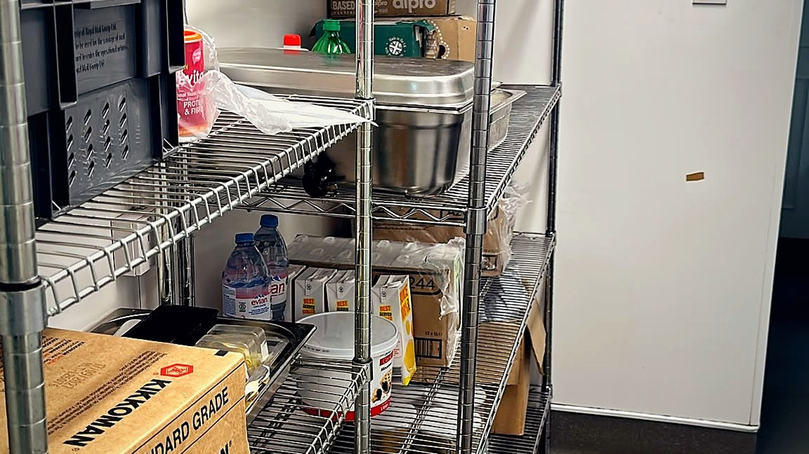
Dry store
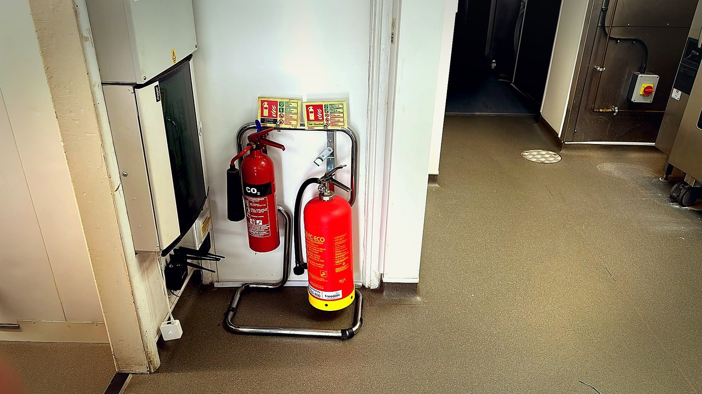
Fire point
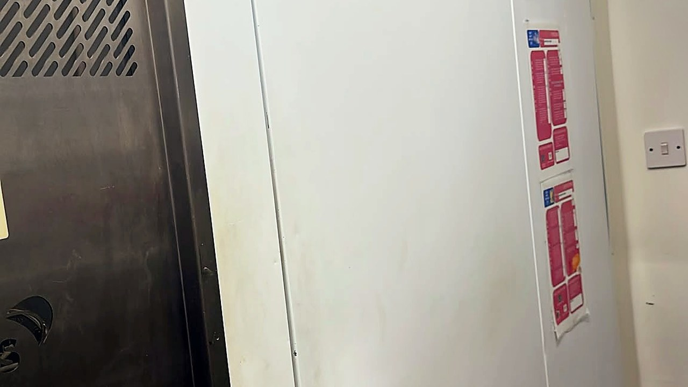
Walk-in
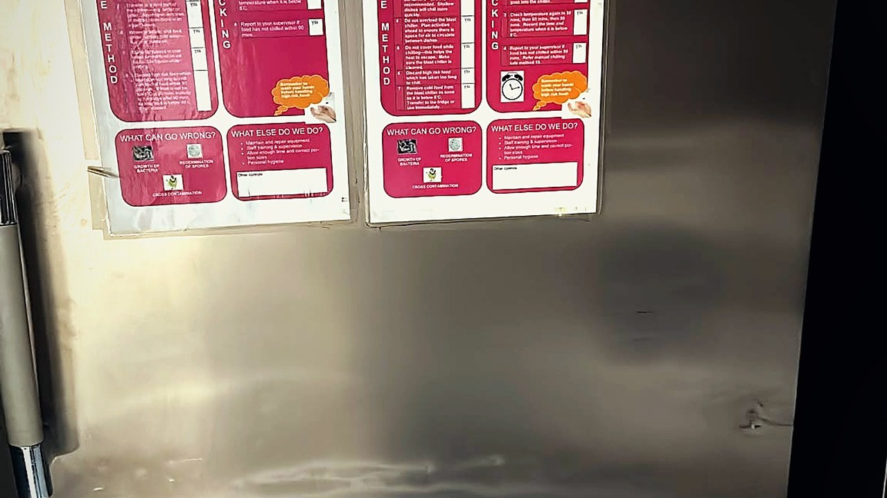
Blast chiller
Training media standard Same manufacturer and model family only. Priority: cleaning, safety, handling, monitoring and equipment checks. Plant-based / sattvic house — no animal-product cook demos.
DRAFT — NOT APPROVED FOR OPERATION until a competent person reviews and publishes a version. These are working drafts for training and site completion, not live authorised methods.
Practice records on this page are saved in this browser only. They are not the house database. A photograph shows visible condition. It does not prove disinfection, chemical concentration or safe temperature.
Install on this phone or computer
Preparing offline access…
This installs the draft kitchen page as an app on this device. Practice records stay in this browser profile. They are not the house database. On iPhone or iPad use Share, then Add to Home Screen.
Choose a result to jump to its procedure. Follow one sheet at a time. Do not mix a cook step with a store step.
Safety first — kitchen H&S
HouseAll staffBefore any equipment sheet
Do this chapter before Rational, Robot-Coupe, fryer, bratt pan or chemicals. House is sattvic vegetarian — training media here is safety, hygiene and handling only (no animal cook demos).
Know the fire point before service — CO2 and wet chemical, ready and unobstructed.
Slips, trips and spills
Clean spills immediately. Dry floors after mopping or use a wet-floor sign. Clear walkways. Non-slip shoes. Report leaks and damaged floors.
Knives and blades
Trained use only. Keep knives sharp, carry point down, never leave in sinks, cut on a stable board, store in a rack. Robot-Coupe discs/blades: cut-resistant gloves when handling.
Heat, steam and oil
Oven gloves for Rational / hot pans. Never put water in fryer oil. Cool oil before drain (<55 °C on J10/N). Stand clear when tilting the bratt pan.
Gas appliances
Know the isolation cock. Extraction on. Clear flue. If you smell gas: do not switch electrics, ventilate if safe, isolate, evacuate, call emergency / engineer. See HSE CAIS23.
Chemicals (COSHH)
Read the SDS for each SK code. PPE as the sheet says. Never mix products. Use dosing where fitted. Store chemicals off food shelves.
PPE and reporting
Apron, hat/hair restraint, covered shoes. Report hazards early. Know first aid and fire points.
This is a professional Rational combi, not a domestic oven. Cooking steps below are from the official SelfCookingCenter original operating instructions (EN-GB, CareControl edition). They apply to the SelfCookingCenter line. They do not replace the rating-plate model once it is photographed. Automatic chemical cleaning stays blocked (KP-09).
House rule sits on top of the manufacturer screen: this kitchen is sattvic vegetarian. Do not run Poultry, Fish or meat Joints programmes. Do not load onion or garlic. Food safety: cook to 75°C for 30 seconds or a validated equivalent — a brown colour is not enough.
Ready the oven
Confirm the cabinet is empty of people and trays you do not need. Air baffle locked top and bottom — a loose baffle can meet the rotating fan. Wear oven gloves. Cool the core-probe needle with the hand shower before you use it. Park the probe in its holder when it is not in food.
Switch on
Use the 0 / I rocker. SelfCooking Control starts when the unit is on, or when you press the SelfCooking Control button. The screen and rotary dial are the controls. If the screen is dark, it is off or in standby — do not guess a hidden setting.
Choose how you will cook
A — SelfCooking Control (preferred when trained). Select the food group that matches this kitchen (Side Dishes, Potato Products, Bakery Products, Egg Dishes/Dessert, Finishing). Set the result the screen asks for (for example browning or doneness). The oven then measures load size and keeps adjusting time, temperature and cabinet climate. Remaining time is shown.
B — Combi-Steamer manual. Press Moist Heat, Dry Heat, or both together.
Moist Heat (steam): cabinet 30–130°C. Use for steaming, stewing, blanching, simmering, soaking, thawing, preserving.
Dry Heat (convection): cabinet 30–300°C. Use for baking, roasting, grilling, gratinating. You may cap humidity with ClimaPlus. After 60 minutes in continuous operation at 300°C the cabinet steps down to 270°C. Do not run Dry Heat at high temperature for more than 2 hours without a water supply.
Combination (moist + dry): cabinet 30–300°C. Hot humid climate for roasting, baking and Finishing. Press Moist Heat and Dry Heat together, then set climate, temperature and time or core temperature.
Preheat, then load
Wait until the display shows Load (preheat status is shown in red and blue). Do not open and load during preheat unless the screen tells you to. Use the mobile rack that is already in this unit. Close the door fully. Heating and the fan wheel stop when the door opens; the fan brake works, but the wheel can still turn briefly — keep hands out.
Core probe when the food is thick
Insert the needle through the thickest point at 30–45°. It must sit in the middle of the food. Use the positioning aid on soft or thin pieces. If the probe is missing or wrong, the oven sounds and asks you to set it. Cool the needle with the hand shower before the next use. Remove the probe from the food before you take the tray out.
Pass or fail the cook
Check a core temperature. House rule: 75°C for 30 seconds or the site-validated equivalent. If it fails, continue the programme or return to heat — do not send it. Record product, programme or manual settings, load, start, finish and the reading.
Unload and cool the cabinet
Gloves on. If you need the Cool Down function, lock the air baffle first. During Cool Down the fan does not stop when the door is open — do not touch the fan wheel. Hot vapour will come out. Do not use Cool Down as a clean.
Daily care — what kitchen staff may do
Rational requires the cabinet cleaned every day, or when the cleaning prompt appears, even after steam-only use. Use only Rational cleaner and care products. Site stock: Brakes A 591254 red cleaner tablets and A 555874 care tablets. The oven screen states how many tablets — do not invent a count. Wipe the door seal with a non-abrasive cleaner. Do not use a pressure washer, acid, or scratchy pads. Do not use SK oven spray or fryer chemicals in this cabinet. Automatic CleanJet+care stays blocked until the rating plate, SDS and COSHH are on file.
Fan, motor and faults — do not repair
The fan wheel and drive motor are engineer work. Do not reach behind the air baffle. Do not oil, reset or replace a motor from the internet. If the oven shows a service message, or the fan is noisy, or it will not heat or steam: stop cooking, isolate if it is unsafe, photograph the screen and the rating plate, then call service.
Technical / parts. Rational UK 01582 480388 (7 days). Site engineer: Sylvester Keal 01472 352033 (approved Rational partner for this region). Quote the model and serial from the rating plate.
Sources: Rational SelfCookingCenter original operating instructions EN-GB (Keeling-hosted manufacturer PDF); Rational ChefLine page; FSA cooking temperature guidance used only for the 75°C / 30 second house check. Document library: rational-online.com documents.
Robot-Coupe R 502 V.V. — cutter & vegetable slicer
Multi-function processor for this kitchen’s prep: cutter bowl (chop, emulsify, knead, grind, sauces) and vegetable slicer (slice, grate, ripple, julienne, dice, French fry). Specs from Robot-Coupe R 502 V.V. product sheet: single-phase induction 1 500 W; cutter 300–3 500 rpm; veg prep 300–1 000 rpm; 5.9 L stainless cutter bowl; timer + pulse; metal motor base (~30 kg).
House rule on top of the manufacturer: sattvic vegetarian — no meat, fish, egg, onion or garlic in this machine. Official product page: robot-coupe.com R 502 V.V.. Written steps follow Robot-Coupe safety & operating instructions (R 502 g / R 502 V.V. g family). They do not replace on-site training or the rating plate.
Before you touch it
Only trained staff over 18. Read the controls: red = stop, green = start, black = pulse. Check the power cord and plug. Machine must be on a stable worktop; recommended hopper rim height about 1.20–1.30 m. Blades and discs are extremely sharp — handle with cut-resistant gloves when assembling or cleaning.
Watch the manufacturer videos first
Play the Assembly & Operation and Cleaning & Maintenance clips in the media column (or drop local mp4s into kitchen-videos/). Do not run the machine empty. Do not override interlocks.
Assemble — cutter bowl
Motor base facing you → seat the bowl and turn right until locked → lower the blade fully onto the shaft and check it rotates freely → fit lid with scraper arm and turn right until locked. Machine will not start unless bowl and lid are locked (magnetic safety + motor brake).
Assemble — vegetable preparation head
Fit veg bowl and lock right. Fit discharge / ejection plate. Fit chosen disc (or dicing grid + matching slicer) and turn clockwise to seat. Fit loading cone or cabbage tool as required. Close and lock the lid / lever hopper. Use the Exactitube / cylindrical hopper pushers — never push food with your hand.
Run
Fill within safe load (do not pack dense product past about two-thirds). For R 502 V.V.: cutter speed range 300–3 500 rpm; veg prep limited to 300–1 000 rpm (electronics enforce this). Use pulse for control. Timer can countdown or stopwatch; unit auto-stops after 9 minutes with no button presses. Stop with the red button.
Stop and open safely
Press red stop. Wait until the motor and the food have fully stopped moving before opening the lid (spatter / burn risk from hot or liquid mixes). Relock lid, then green start or black pulse to resume.
Clean (end of every use)
Unplug first. Never immerse the motor base. Clean bowl, lid, scraper, blade and discs by hand with suitable detergent (aluminium-safe on alloy parts; avoid harsh alkaline on plastics). Dry blades thoroughly. Check motor seal and safety devices regularly; replace worn seals / scraper rubbers per manufacturer guidance.
Faults — stop and call engineering
Thermal overload / error codes (E01 overload, E08/E12 thermal, E09/E14 safety open, etc.): press stop, reduce load, let cool, check vents and guards. Do not bypass safety switches. Damaged cord, cracked bowl, or blunt/chipped blade → tag out and call the approved Robot-Coupe service partner.
Risk assessment — Robot-Coupe R 502 V.V. (draft site overlay)
Method: residual risk after existing controls = Probability × Severity (1–3 each). Target residual ≤ 2. Aligns with The Vedanta generic food-prep equipment approach and Robot-Coupe warnings. Head Chef must tick site controls and revise ratings.
Hazard
Who
Controls (manufacturer + house)
P
S
R
Severe cuts / amputation from S-blade or discs
Kitchen staff
Trained 18+ only; cut-resistant gloves for blade/disc handling; never reach into bowl or hopper; use pushers only; wait for full stop; keep blades sharp and seated; store discs in rack
2
3
6→2*
Entanglement / crushing in hopper
Kitchen staff
Never defeat interlocks or lid locks; keep hands clear of lever hopper; use Exactitube / cylindrical pushers; loose sleeves/jewellery off
1
3
3→2*
Electric shock
Staff / engineers
Earthed socket only; unplug before cleaning or opening motor; never immerse base; damaged cord = tag out; qualified electrician for install
1
3
3→2*
Splash / burn from hot or liquid mix when lid opened early
Kitchen staff
Red stop; wait for motor and product to stop; keep lid seal sound; cool liquids before aggressive lid opening
2
2
4→2*
Manual handling (≈30 kg machine)
Staff
Do not lift alone; keep on stable bench; move with two people or trolley
2
2
4→2*
Cross-contamination / allergen
Customers / staff
Clean between allergens; house sattvic rules; dedicated boards/utensils as site policy; wash, rinse, sanitise attachments
2
2
4→2*
Noise / overload / motor heat
Staff
<70 dB(A) unloaded; do not run empty; respect thermal cut-out; clear base vents; reduce load after E01/E08
1
1
1
*Residual 2 assumes all listed controls are in place on this site. If any control is missing, stop use until fixed. Head Chef sign-off required before this sheet is “live”.
I confirm the above controls are in operation at this location — Yes / No Signed: ________ Date: ________
Site-specific notes added? Yes / N/A Additional site RA done? Yes / N/A
Safety & operating instructions PDF (R 502 g / R 502 V.V. g family) — manufacturer warnings, assembly, cleaning, safety brake, 9‑minute auto-stop, error codes
Manufacturer tutorial videos linked from the product documentation tab (Assembly & Operation; Cleaning & Maintenance)
Vorwerk Thermomix TM6
EQ-11DraftManufacturer source
Connected cooker-blender for sauces, soups, milling and guided recipes. Base unit stays dry; bowl knife is sharp. House sattvic rules apply - no meat, fish, egg, onion or garlic.
Facts from Vorwerk TM6 manuals: clean after every use; do not immerse base; dishwasher OK for parts except base (plastics on top rack); Pre-clean / guided cleaning on-machine; knife seal can fail if knife left soaking.
Safety first
Unplug before cleaning the base. Keep hair, clothing and utensils away from the knife. Never reach into the bowl while the knife may move. Hot contents can splash - use the measuring cup / lid correctly.
Assemble bowl and knife
Seat the mixing knife and sealing ring correctly before locking the bowl base. Watch the official assemble-bowl video. Contact pins under the bowl must be clean and dry.
Cook
Follow on-screen guided cooking or manual mode. Do not exceed fill marks. Use Varoma only as designed. Keep the unit on a stable, dry worktop.
Pre-clean between steps
Use TM6 Pre-clean / self-cleaning mode with water as prompted for quick turns between recipes.
Deep clean
Remove bowl, dismantle knife carefully (hot knife risk - protect hands), wash parts, dry thoroughly, reassemble. Wipe base with a barely damp cloth only - never under a tap.
Faults
If water enters the base, stop and call Vorwerk service. Do not run with a cracked bowl or damaged cable.
Risk assessment - draft site overlay
Residual risk after controls = P x S (1-3). Target residual low. Head Chef must confirm site controls before this sheet is live.
Hazard
Who
Controls
P
S
R
Cuts from mixing knife
Staff
Trained use; assemble correctly; never reach in while powered; careful dismantle; dry storage
2
3
6->2*
Burns / splash
Staff
Lid and measuring cup seated; respect hot modes; allow steam to vent safely
2
2
4->2*
Electric shock
Staff
Never immerse base; unplug to clean; dry contacts
1
3
3->2*
Cross-contamination
Customers
Wash between allergens; house sattvic rules; dry knife seal
2
2
4->2*
Controls in operation here? Yes / No Signed: ________ Date: ________
Lincat Silverlink 600 J10/N — natural gas twin-tank fryer
EQ-02J10/NNatural gas · 24.0 kWDraft · KP-11 blocked until signed
Model locked from manufacturer page: Lincat Silverlink Natural Gas Free-standing Twin Tank Fryer — 2 baskets — W 600 mm — 24.0 kW — SKU J10/N (EAN 5056105105084). Product: lincat.co.uk J10/N.
Site still needs the rating-plate serial photographed. Specs from Lincat: twin tanks 2 × 12 L; 2 baskets; piezo ignition; cool zone; internal drain; thermostat to 190 °C; flame failure + top-temperature cut-out; freestanding ~1060 × 600 × 690 mm; ~73 kg; natural gas 24 kW; output up to ~46 kg chilled chips / h (12 mm). House: sattvic vegetarian — no meat in this oil. KP-11 stays blocked until oil type, filter method and Head Chef sign-off.
Before lighting
Trained staff only. Extraction canopy on. Flue clear — do not block. Gas isolation cock known. Fire blanket / suitable extinguisher within reach. Dust cover / lid off while operating. Do not leave unattended.
Oil fill (both tanks)
Drain valves closed; blanking nuts fitted. Liquid oil/fat only — solid fats must be liquefied first. Fill each tank to the lower level on the batter plate; keep at the upper level during service. Never run without oil. Never put water in the oil. Max basket load 1.5 kg per basket (manual).
Light — piezo pilot then main burner
Open supply isolation valve. Control knob to Off. Push in and turn anticlockwise to pilot (piezo clicks). Hold ~20 seconds after pilot lights. Then turn to operating position and set thermostat (range about 110–190 °C; do not overheat oil). If pilot fails: return to Off, wait to reset, retry. Standby = leave on pilot only.
Fry
Wait until oil is at set temperature before loading. Drain food of moisture; defrost frozen product when practical (frozen loads cut recovery). Do not overload baskets. Twin tanks let you split products/loads — still follow house allergen and sattvic rules. Prefer standby (pilot) when idle to protect oil life.
Safety thermostat
If the unit shuts down on safety cut-out, allow oil to cool, then reset the red safety thermostat button. Persistent trips = stop and call Lincat service (UK 01522 875520) — do not bypass.
Shut down
Turn control to pilot to kill main burner, or to Off and shut the gas cock for full isolation.
Drain / filter / clean (when KP-11 unblocked)
Cool oil below 55 °C before draining. Fit drain tube; lift handle lock; drain to a suitable vessel; close valve; refit blanking nut. Filter regularly; change oil when dark, foaming or smoking early — old oil has a lower flashpoint and surges more. Clean panels with warm water + mild detergent only — no water jet, steam cleaner or immersion. Clean drain valves with a tube/flue brush. Dry thoroughly.
Install notes (engineer)
Gas connect R½ (½″ BSP); natural gas supply ~20 mbar class; category appliance — user must not convert gas type. Min free ventilation area 4.5 cm² per kW total heat input. Commissioning and conversion only by qualified person.
Risk assessment — J10/N draft site overlay
Residual risk after controls = P × S (1–3). Target low residual. Head Chef sign-off required before live oil work / KP-11.
Hazard
Who
Controls
P
S
R
Oil fire / flashpoint (esp. old oil)
Staff / building
Correct fill; filter/change oil; never water; supervised use; canopy; extinguisher + blanket; no unattended run
2
3
6→2*
Surge boil / splash burns
Staff
Drain food; max 1.5 kg/basket; no overfill; PPE
2
3
6→2*
Hot oil drain / refill burns
Staff
Cool <55 °C before drain; never add cold oil to hot during cook
2
3
6→2*
Gas / CO / incomplete combustion
Staff
Qualified install; clear flue; canopy; isolation cock known; service schedule
1
3
3→2*
Pilot / burner faults
Staff
Correct lighting sequence; cool reset of safety thermostat; engineer for lockout/persistent fail
2
2
4→2*
Allergen / sattvic breach between tanks
Customers
Tank dedication or full oil change + clean; house rules
2
2
4→2*
*Residual 2 assumes listed controls are in place. Controls in operation? Yes / No Signed: ________ Date: ________
Serial on plate recorded? ________ Oil type: ________ Filter method: ________
Lincat care: 01522 875555 · service 01522 875520 · care@lincat.co.uk
Electrolux professional bratt / braising pan
EQ-03DraftBlocked for live clean (KP-08)Manufacturer-family guidance
Electrolux professional bratt / tilting braising pan on site (EQ-03). Exact model from rating plate still required. Guidance below is from Electrolux Professional tilting braising pan product literature (motorised tilt / Soft Stop on many models, safety thermostat, 50-250 C class controls on HPC lines; 900XP class 80-300 C).
KP-08 bratt pan cleaning stays blocked until model, tilt type (manual/auto), and clean method are verified. Extremely hot surfaces and splash when tilting.
Identify
Record model/serial, capacity, tilt type, and whether Soft Stop / motorised tilt is fitted. Read the control panel icons before first use.
Preheat and cook
Set target temperature; wait for ready. Use lid where the process needs it. Do not leave hot pan unsupervised. House sattvic rules for all products.
Tilting / pouring
Stand clear of the pour path. Use controlled tilt only - never force. Soft Stop models decelerate at end of travel; keep feet and hose clear of the cascade.
Overheat protection
Safety thermostat protects against overheating / low jacket water on jacketed models. If tripped, cool down and follow the model manual - do not bypass.
Clean (when unblocked)
Cool first. Remove food soil; use approved detergent for stainless; rinse; dry. Do not flood electrics. Follow site COSHH for degreasers.
Tag-out
Damaged lid, tilt fault, or error codes - stop, isolate if safe, call approved engineer.
Risk assessment - draft site overlay
Residual risk after controls = P x S (1-3). Target residual low. Head Chef must confirm site controls before this sheet is live.
Hazard
Who
Controls
P
S
R
Burns from pan / lid
Staff
PPE; respect preheat; lid handles; cool before clean
2
3
6->2*
Splash when tilting
Staff / passers-by
Clear pour zone; controlled tilt; announce pour
2
3
6->2*
Crush / pinch on tilt mechanism
Staff
Hands clear of hinge/path; only trained operators
1
3
3->2*
Chemical clean burns
Staff
COSHH; PPE; KP-08 blocked until method set
2
2
4->2*
Controls in operation here? Yes / No Signed: ________ Date: ________
Sources
Electrolux Professional tilting braising pan literature (example 90lt wall): tools.electroluxprofessional.com product PDFs
Foster blast chiller on site (EQ-04). Exact BCT/BFT model from rating plate still needed. Steps follow Foster BCT/BFT user manuals: stand after move, ventilation clearance, controller cycles, probe vs timed chill, hold phase, defrost.
Food safety overlay (UK catering practice): blast chill hot food in shallow layers; do not overload; probe thickest point; record times/temps on site forms. Target chill performance must match the site HACCP (often toward fridge temperature within the site time limit) - confirm against your food safety management system.
Placement and power
Keep ~150 mm ventilation clearance around the cabinet (Foster manuals). Do not site in hot wash-down draughts. Dry hands when plugging. After relocation, allow standing time before power if the manual requires it.
Home screen
After boot, Home shows air temperature, date/time. Select the chill/freeze cycle type, then Start.
Load correctly
Shallow GN pans; space for air; probe in the thickest food piece when using probe mode. Do not block evaporators. Label product in/out.
Cycle and hold
Cooling phase runs by probe or fixed time; then Hold raises/maintains storage temperature so food does not keep freezing. Watch the progress screen.
Defrost
Automatic defrost on hold in many controllers; manual defrost from the menu when iced. Keep drain path clear.
Clean
Isolate if required by site. Clean interior with food-safe detergent; wipe door seals; never hose the controller. Report faults to Foster service.
Risk assessment - draft site overlay
Residual risk after controls = P x S (1-3). Target residual low. Head Chef must confirm site controls before this sheet is live.
Hazard
Who
Controls
P
S
R
Bacterial growth if chill fails
Customers
Correct load; probe; record; do not use failed cycles
2
3
6->2*
Cold burns / probe injury
Staff
Care with probes and frozen pans
1
2
2
Electric shock
Staff
Dry hands; engineer for electrics
1
3
3->2*
Contamination
Customers
Clean seals/shelves; covered food; allergen control
2
2
4->2*
Controls in operation here? Yes / No Signed: ________ Date: ________
Site kit: two portable single-zone Buffalo induction hobs (EQ-12) — not a built-in 4-ring / 4-zone cooktop. Confirm exact portable model from each rating plate. Guidance from Buffalo induction hob manuals: magnetic cookware only; keep vents clear; never empty-pan heat; cracked glass = stop; pacemaker distance warning in manuals (~60 cm class).
Cookware
Use flat, induction-ready ferromagnetic pans that match zone size. No aluminium/glass/copper unless marked induction-ready.
Setup
Stable worktop; vents unobstructed; RCD-protected supply as site electrics require. Keep liquids off the glass and controls.
Operate
Place pan before setting power. Do not heat empty. Do not leave unattended on high power. Use suitable power levels for the pan.
Glass damage
If the ceramic glass cracks, disconnect immediately and tag out - do not use.
Clean
Cool glass; wipe with induction-safe cleaner; no abrasive pads that scratch; never pressure-wash.
Health note
Staff with pacemakers/implants: follow manufacturer distance guidance and occupational health advice.
Risk assessment - draft site overlay
Residual risk after controls = P x S (1-3). Target residual low. Head Chef must confirm site controls before this sheet is live.
Hazard
Who
Controls
P
S
R
Fire / empty pan overheat
Staff
Never run empty; supervised use
2
3
6->2*
Burns
Staff
Hot pans/glass; PPE as needed
2
2
4->2*
Electric shock / cracked glass
Staff
Stop if cracked; isolate; dry clean only
1
3
3->2*
EMI / implants
Vulnerable staff
Distance per manual; OH advice
1
3
3->2*
Controls in operation here? Yes / No Signed: ________ Date: ________
Match the PDF to the site model before training sign-off.
Foster G2 freezer (and upright freezer)
EQ-05 / EQ-06DraftLinks to STORE-FREEZE
Foster G2 freezer label 2 (EQ-05) and upright freezer label 3 (EQ-06). Day-to-day checks live on the Freezer - inside sheet. This card adds manufacturer-style discipline: identify cabinet, keep seals clean, manage ice, do not wedge doors, engineer for refrigerant work.
Identify
Name the cabinet on every check (Foster G2 freezer 2 vs upright 3). Walk-in units: know light and emergency exit before entry (see EQ-10).
Temp and stock
Read the display/thermometer. Investigate out-of-range before service. FEFO; closed packs; no crushed boxes blocking airflow.
Ice and seals
Report ice build-up and torn seals. Manual defrost only if trained and following the model method - food moved to alternative frozen storage.
Clean
Follow KP-21 / KP-22. Isolate as required. Food-safe cleaners only.
Risk assessment - draft site overlay
Residual risk after controls = P x S (1-3). Target residual low. Head Chef must confirm site controls before this sheet is live.
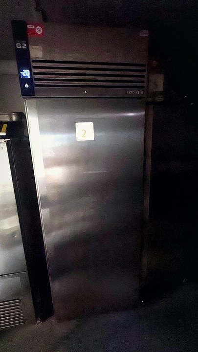
Confirm −18 °C or colder · seals clean · alarms reported.
Hazard
Who
Controls
P
S
R
Food spoilage if warm
Customers
Monitor; alarm response; do not ignore
2
3
6->2*
Slip / cold store injury
Staff
Clear floors; buddy for walk-in
2
2
4->2*
Controls in operation here? Yes / No Signed: ________ Date: ________
Sources
Use Foster manuals for the exact serial; day checks on STORE-FREEZE.
GRAM pass fridge
EQ-08DraftLinks to STORE-CHILL
GRAM pass-through / pass fridge on site (EQ-08). Operational checks belong on Fridge - inside. Add manufacturer discipline: airflow, seals, never store chemicals inside, probe accuracy, clean condensers only if competent.
Identity
Always write GRAM pass (not “the fridge”).
Load
Cooked above raw as house rule; labels out; do not block return air.
Temp
Check display vs independent probe on audit days.
Clean
Door seals and handles daily; deep clean per KP-19 / KP-20.
Risk assessment - draft site overlay
Residual risk after controls = P x S (1-3). Target residual low. Head Chef must confirm site controls before this sheet is live.
Hazard
Who
Controls
P
S
R
Temperature abuse
Customers
Checks; do not overload; report faults
2
3
6->2*
Cross-contamination
Customers
Segregation; clean seals
2
2
4->2*
Controls in operation here? Yes / No Signed: ________ Date: ________
Sources
GRAM commercial refrigeration support via supplier; day checks on STORE-CHILL.
Dry store
Store 1 of 3DraftSite photograph
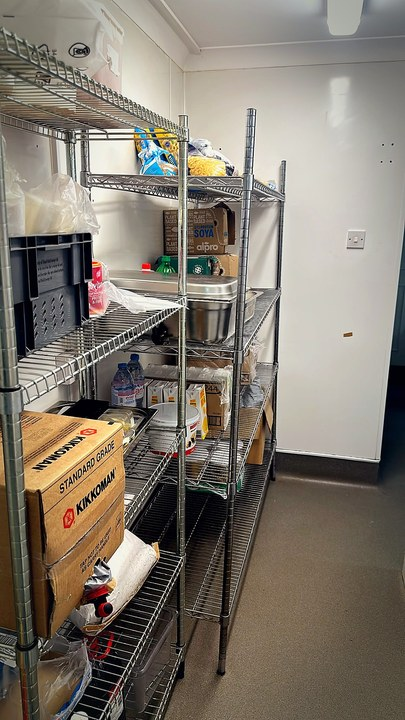
Stock off the floor · clear labels · FIFO — calm order on every shelf.
Enter and look
Lights on. Read the shelves as they are, not as you remember them. This photograph shows Kikkoman soy and Alpro Soya — soya is a regulated allergen. If the video is attached, watch it once before you start the first check of the day.
Identity
Every open pack needs a name and a date. Reject onion, garlic, egg, fish or meat at once. A vegetarian label is not enough — read the ingredients.
Dates
Use-by is safety. Best-before is quality. Hold anything with no readable date. Do not extend a date because the store was tidy.
Rotation
First in, first out, unless a shorter use-by sits in front — then that one goes first (FEFO). Face labels out. Keep chemicals off food shelves.
Close
Floor clear. Door shut and locked if that is the site rule. Record what you held or discarded.
Fridge — inside
Store 2 of 3DraftSite photograph
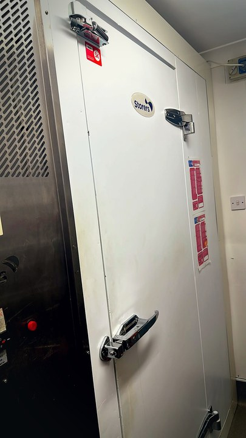
Close firmly after use · lights checked · food covered.
Identify the cabinet
Name the fridge (Xtra 3, GRAM pass, walk-in chilled, or another). Do not write “the fridge”.
Look inside
If the inside video is attached, watch it for the route: door seals, top shelf, cooked above raw, spills, labels facing out. Then open and do the same with your eyes. Close the door between shelves if you are working slowly.
Temperature
Take today’s air reading with the site probe or the cabinet display as the chef directs. FSA: cold food at 8°C or below in England; set point commonly 5°C or below to allow swing. Out of range is never a pass. Record the number and what you did.
Dates and identity
Every tray: name, date, allergen if relevant. Hold missing dates. Walk-in: confirm it is empty of people and the inside exit works before you leave.
Close
Door shut. Seals clean. Record the unit, reading, holds and your name.
Freezer — inside
Store 3 of 3DraftSite photograph
Identify the cabinet
Name it (Foster G2 freezer 2, upright 3, walk-in freezer). Walk-in: know the LIGHT button and the inside exit before you enter.
Look inside
If the freezer video is attached, follow that route. Check ice build-up, open packs, crushed boxes and anything thawing. A dEF display is a defrost state — record it as process, not as a passed temperature.
Temperature
Record today’s reading. Do not copy a number from a photograph. Out of range: hold food, tell the chef, do not treat a later “normal” air reading as automatic release.
Dates and wrap
Frozen goods still need identity and a date. Do not refreeze thawed food unless the chef applies a written site rule.
Close
Door shut. Floor dry enough that it is not a slip. Record unit, reading and holds.
House food and offering
This kitchen is sattvic vegetarian. No onion, garlic, chives, leeks, shallot or spring onion — not in a vegetable and not in a spice. No egg, fish, meat or shellfish. Hidden in a product still counts. Reject it at the door. Source: site house rule, recorded here as a Vedanta operating practice.
When a preparation is ready, follow the office guidance for prayer and mantra. Do not skip it because you are late. Taste and drink only in the separate taste area. Do not bring dessert spoons, dinner spoons, forks or knives into the kitchen to mix or taste. Only glass and plate for plating a dessert.
How we record time
Record start and finish times, document any delay, and attach photographs of defects or failed checks.
Keep three numbers separate: the original plan, the revised forecast after extra minutes, and the actual elapsed and labour times. Do not make every 30-minute job automatically take 60 minutes. Add +5, +10, +15, +30 or a custom amount, with a reason.
Planning durations are provisional until comparable passed jobs exist. Four people working five hours is five elapsed hours and up to twenty labour hours. Do not add those together. A pause is not labour. An unattended machine cycle is process time, not staff time, unless someone must stay with it.
Extra minutes change the forecast only. They never change a chemical contact time or a food use-by date.
Reusable Kitchen Forms
Each form has its own reference: K001–K025 for kitchen and food records; P001–P006 for workplace safety. Choose a form, record the work, then save. Each new entry is stored separately. Open a saved entry to add a correction; earlier revisions remain in its history.
Local records on this browser. Typed names are acknowledgements, not verified identity. Back up with Download all records. Restricted health/incident forms record a reference and action only; confidential details belong in your controlled personnel or incident system.
PDF opens a formatted report: choose Print / Save as PDF. CSV contains labelled data for Excel. JSON is a separate full-history backup.
Entry revision history
Adapted from the June 2024 manual record topics. Operating limits must come from the current approved method; no automatic pass is calculated. Use a new entry for each delivery, temperature reading, batch or job. Inspection and sensitive-case forms are adapted summaries, not replacements for the full controlled assessment or investigation.
Daily Kitchen Work Log
One shift assignment, one named KP / kitchen assistant. The procedure numbers below identify instructions, not separate people or staffing posts.
Record each day’s work, results and follow-up. Records stay in this browser; download a backup. Typed names record who reported or reviewed work, but do not verify identity.
PDF opens a formatted report: choose Print / Save as PDF. CSV contains labelled data for Excel. JSON is a separate full-history backup.
Saved revision history
Each day has a separate record. Every save adds a dated revision; a new day starts with an empty checklist. Signed reviews can include unfinished work only when its reason and follow-up are recorded. Later edits need a new review. Download keeps all saved days and revisions. Browser data can be lost if storage is cleared.
Individual task practice records — optional detail
Practice task record
Synthetic training jobs. Start, pause, add time, add a helper, attach a photo, finish, then review. Reload this page: the record stays in this browser.
Temperature limits used in drafts
These are the current draft check limits. They stay versioned in the house system. Cooking is not a single number: hold 75°C for 30 seconds, or another validated combination. GOV.UK cooking.
Check
Where
Range
Walk-in fridge
Storers chilled room
0–5°C
Prep fridge
XTRA under-counter (label 3) · GRAM pass fridge
0–5°C
Upright freezers
Foster G2 (label 2) · upright 3
−18°C or colder
Cooked core
Pot / pass
75°C for 30 seconds, or a validated equivalent
Hot-hold
Bain
63°C or hotter
Chilled delivery
Goods in
8°C or colder
Opening and closing
Training video
House film not filed for this sheet yet — photo / steps above still apply.
House film
Place kitchen-videos/opening-closing.mp4 beside this pack.
Closing (provisional 35 min): leftovers cooled by the site method and labelled · surfaces clean · fridge last check · waste · tea towels collected. Before locking a Storers walk-in: confirm nobody remains inside, the door can be opened from inside, and the emergency release works. Do not lock a person in.
Cooking, cooling and packed food
Training video
House film not filed for this sheet yet — photo / steps above still apply.
House film
Place kitchen-videos/cooking-cooling.mp4 beside this pack.
Cook. Probe the thickest part. 75°C for 30 seconds, or another validated time-and-temperature combination. Write the number and the hold. Hot-hold at 63°C or hotter.
Cool. Photographs taken 9 September 2026 show two posters on the Foster blast chiller: Safe Method 19 Manual chilling and Safe Method 18 Blast chilling. The site note on both is: “We use for: Pie fillings, rice, salad items.” Both posters require a 90-minute check. The blast-chilling poster says food should be below 8°C; if the 90-minute target is missed, revert to the manual method. Record cooking finish time and temperature, then the chill checks. A competent person must confirm these posters are the current approved method. Do not invent a shorter time.
PPDS packed food. The label needs the food name and the full ingredients list, with the relevant allergens emphasised in that list. FSA PPDS labelling.
This kitchen — equipment from site photographs 9 September 2026
Identity photographs only. Cooking, dry store, fridge and freezer work from the numbered sheets at the top of this book. Do not mix notes from different machines.
Front of house. Control screen, rotary dial, rinse hose and chemical drawer visible. Exact SCC model from the rating plate is still missing. Site supply: Rational red cleaner tablets Brakes A 591254 and care tablets Brakes A 555874. KP-09 stays blocked until the plate, SDS, COSHH and on-screen programme are matched.
EQ-RC502 Robot-Coupe R 502 V.V.
Cutter + vegetable slicer. Open the numbered sheet for assembly, safe use, cleaning, manufacturer videos and the draft risk assessment.
Two baskets, hinged lid. Asset tag SK Planned Care about 24278. On-machine sticker: isolate at mains before cleaning; do not overfill; dry food before immersing; return thermostat to zero. Exact model and approved chemical still missing. KP-11 stays blocked. Do not use Rational tablets in this fryer.
Asset 25276 with QR. Dial about 50–300°C. Tilt handwheel and fill tap present. This is the bratt pan, not a bread tin. KP-08 stays blocked until the rating plate and cleaning manual are attached.
Site posters for Safe Method 19 and 18. Display showed 02:19 at the time of the photograph. A Buffalo unit was sitting on top — that is not part of the chiller. Record chill jobs against this unit ID.
Two portable hobs, OFF–MIN–MAX dials, hot-surface warning. Isolate after use. Manufacturer instructions still needed for cleaning the glass.
Dry store, pots and fire equipment
Dry store photograph shows Kikkoman soy sauce and Alpro Soya on the wire shelves. Soya is a regulated allergen — keep labels and the allergen board aligned with what is actually in use. Stainless pots and bowls are the KP-07 cookware stream. Fire point: CO2 for electrical/flammable liquid and wet-chemical F-class for fryer oil fires.
Dry store. Check dates and allergen identity at receipt and daily rotation.
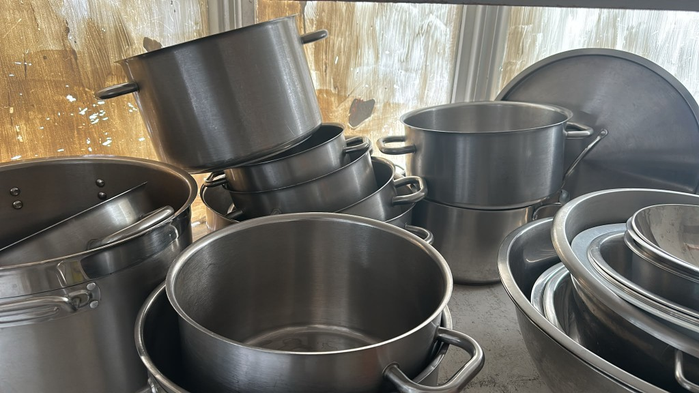
Cookware for KP-07. No wire wool on food-contact surfaces.
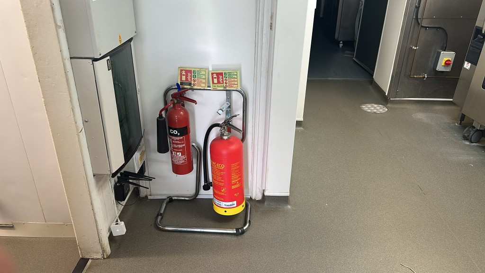
CO2 horn unit and F-class wet chemical. Know which one before a fryer fire.
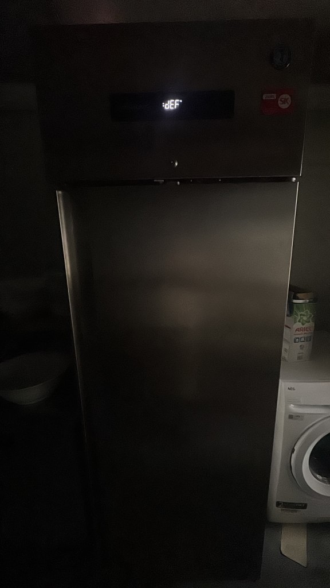
Display showed dEF (defrost). Record as a process state, not a passed temperature check. Laundry AEG washer and Ariel were in the same photograph — keep food and laundry chemicals separate.
Further site photographs from the same visit
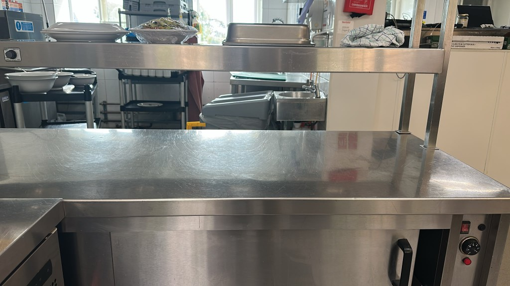
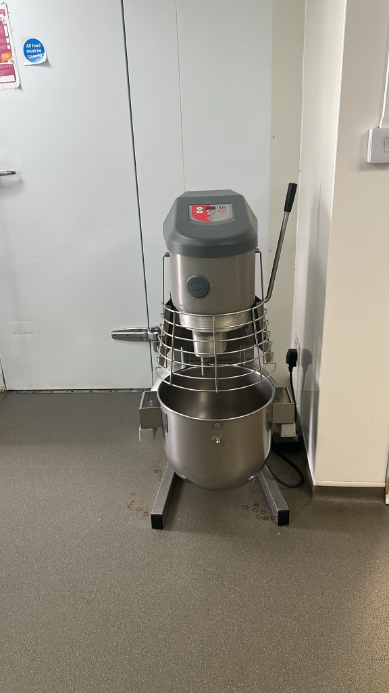
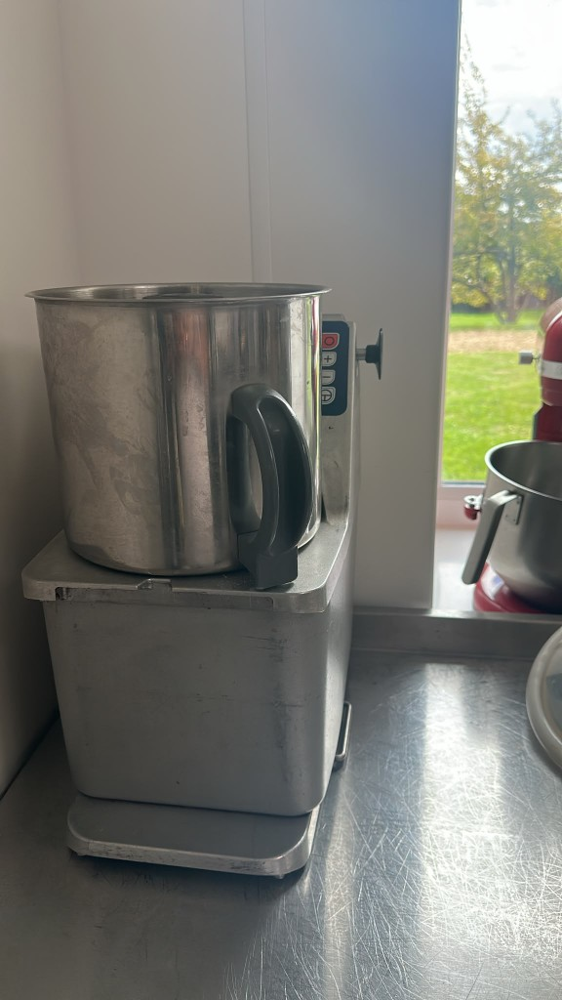
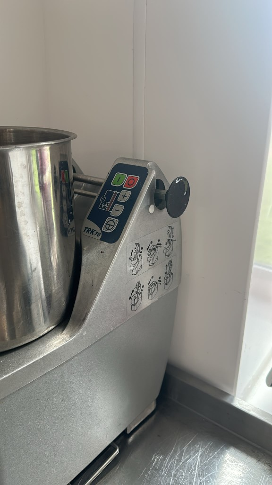
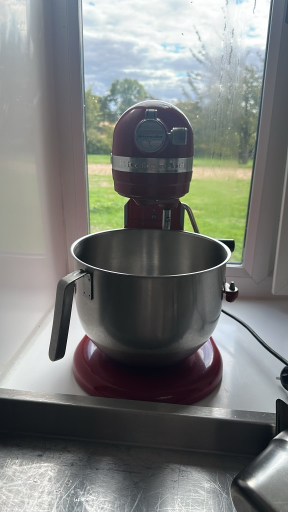
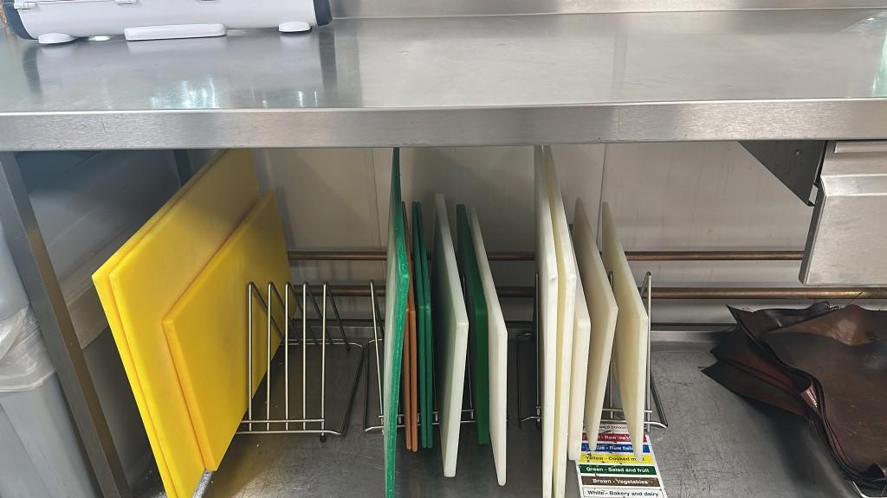
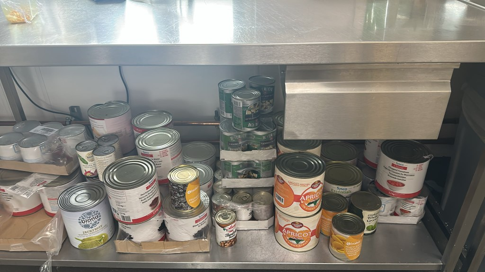
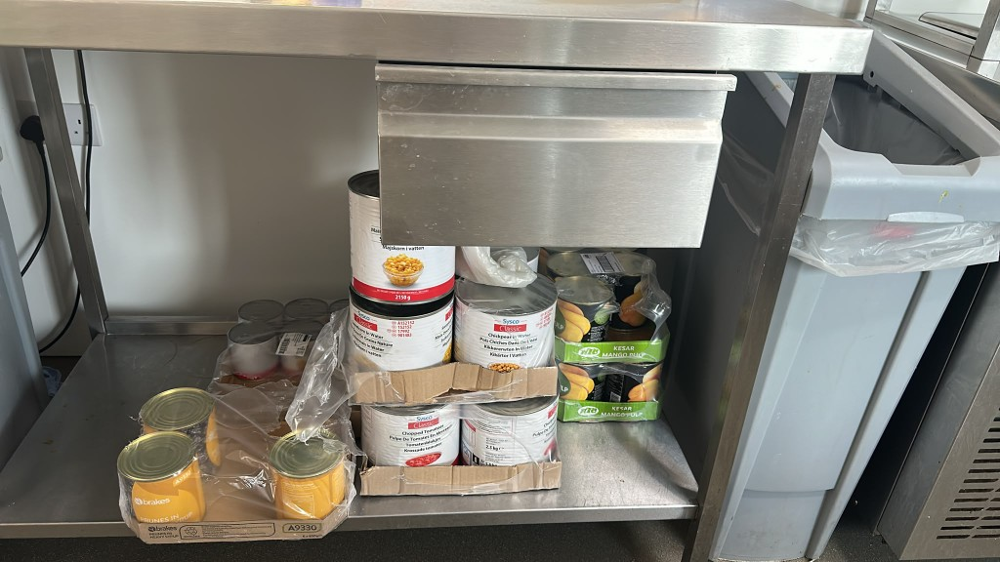
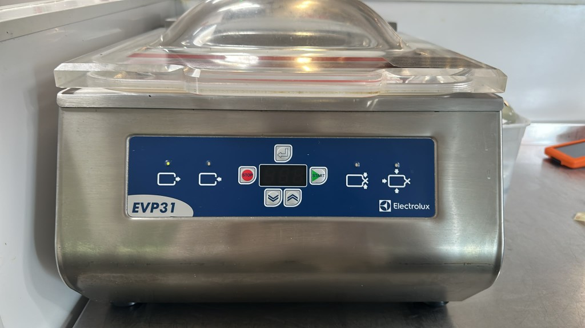
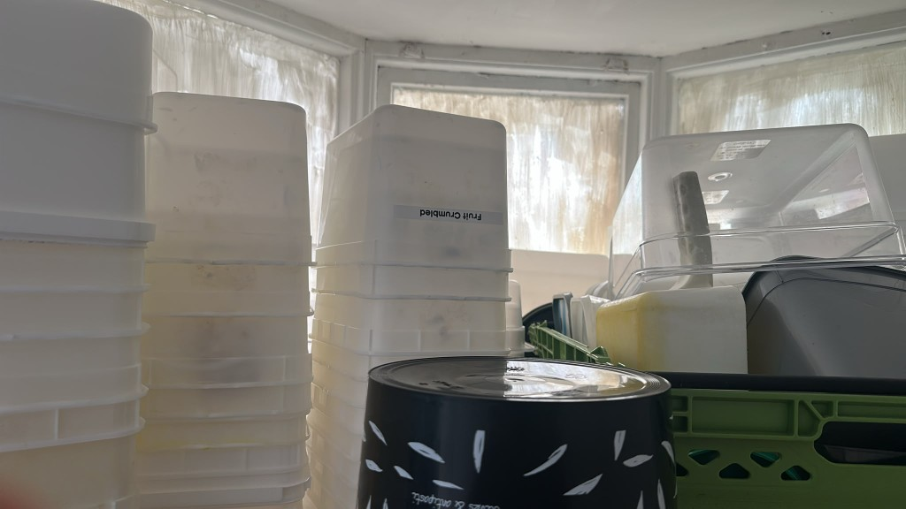
8. Staff how-to · quick competency
One short form per machine or hazard. Staff tick what they were shown, pick an outcome, sign. Managers keep rotas and planned shifts elsewhere — not on these sheets.
Quick competency · sign-off
Robot-Coupe R 502 — how to operate
Tick only what was shown and done today. One date. No planned-time maze — manager keeps the rota separately.
Outcome
Staff signature
I understand safe use and will follow house SOP
Trainer signature
Competence observed / further training noted
Signed & locked — print a copy for the file. Unlock only if trainer needs a correction.
Quick competency · sign-off
Thermomix TM6 — how to operate
Tick only what was shown and done today. One date. No planned-time maze — manager keeps the rota separately.
Outcome
Staff signature
I understand safe use and will follow house SOP
Trainer signature
Competence observed / further training noted
Signed & locked — print a copy for the file. Unlock only if trainer needs a correction.
Quick competency · sign-off
Blast chiller — how to operate
Tick only what was shown and done today. One date. No planned-time maze — manager keeps the rota separately.
Outcome
Staff signature
I understand safe use and will follow house SOP
Trainer signature
Competence observed / further training noted
Signed & locked — print a copy for the file. Unlock only if trainer needs a correction.
Quick competency · sign-off
Sharp objects — knives & mandoline
Tick only what was shown and done today. One date. No planned-time maze — manager keeps the rota separately.
Outcome
Staff signature
I understand safe use and will follow house SOP
Trainer signature
Competence observed / further training noted
Signed & locked — print a copy for the file. Unlock only if trainer needs a correction.
Current suppliers — where and how to order
DRAFT site list recorded 9 September 2026 from the named websites and the kitchen’s stated accounts. The same cards are in the app: Pocket → Kitchen → Order, and House → Kitchen SOP. Keep invoices. Check every delivery against house rules (sattvic vegetarian; no onion, garlic, egg, fish, meat or shellfish). This is not a purchase-order system. Account numbers stay in the office, not on this page.
Sylvester Keal
Repairs and servicing for oven, fridge, fryer, dishwasher, laundry and other catering kit. SK chemicals. SK asset tags are already on several machines.
Call for a breakdown or PPM visit. Chemicals through the SK account. Gas Safe 22893. Aim within 24 hours; emergency 7 days 08:00–17:00.
Westside Business Park, Estate Road 2, Grimsby, DN31 2TG
Record each delivery on K006 (supplier register) and K008 (acceptance). A listed supplier is not permission to accept a non-compliant product.
SK chemicals — draft HACCP / COSHH records
SK / Sylvester Keal - manufacturer docs (no official training videos found)
Request full SDS/COSHH and dilution wall charts from Sylvester Keal (01472 352033). Use automatic dosing where fitted. Never mix incompatible chemicals. Concentrated machine detergents are highly alkaline - PPE required.
House film not filed for this sheet yet — photo / steps above still apply.
House film
Place kitchen-videos/chemicals.mp4 beside this pack.
DRAFT. Prerequisite / COSHH records, not food critical-control points. The figures below are copied from the SK Kitchen Hygiene technical sheets dated 27/09/18. They are not live Vedanta doses. Dilution, contact time and PPE come from the current SDS and the SK dosing unit on this site. Photograph each bottle and attach SDS before a competent person approves.
Site codes named 9 September 2026: 5A daily hard-surface cleaner and degreaser; 1A premium machine dishwashing detergent; 2B dishwashing rinse aid; 2H machine destainer; 3AB bacti / Vector manual dishwashing detergent; 3L Super Lemon sink wash. Heavy-duty canopy, oven and fryer degreasers are a separate product — not 5A. Rational tablets stay on Brakes, not these SK cards.
Older site names S5, S5X and 2X still need a photograph of the label. Do not copy a 5A method onto an unknown code. Record SDS review on P004.
5A — Universal hard-surface cleaner and degreaser
CH-SK-5ADraftDaily surfaces
SK Universal Hard Surface Cleaner & Degreaser. The product most kitchens standardise on for daily floors, walls, worktops and equipment. Not a heavy-duty oven, fryer or canopy chemical. Not a sanitiser on its own.
Identify 5A
Read the bottle. If it is a heavy-duty oven or fryer degreaser, stop — that is a different sheet. Use the SK dosing unit if fitted.
Mix only from the current SDS
The 2018 SK technical sheet says dilute up to 5% with water. That is a sourced note, not a live site law. Confirm on the SDS before you mix. Do not mix with bleach, destainer or dishwash detergent.
Bucket wipe or mop
Dose into the bucket, then dilute. Wipe with cloth or sponge. Use a non-scratch pad only for stubborn soil. For floors, mop then remove the soiled solution. Do not leave a slippery film.
Rinse food-contact surfaces if required
If the SDS requires a rinse, rinse now. Allow to dry. Record product, area, method and operator on K022.
If it goes wrong
Wrong product or strength: stop, rinse, isolate food, get help. Exposure → Emergency. Do not guess a neutraliser.
Risk as supplied (2018 SK sheet). Not classified; wear gloves for prolonged use. Confirm on the current SDS.
Source: SK Kitchen Hygiene technical sheet 5A, issued 27/09/18; SK commercial kitchen cleaning products page (daily 5A vs separate heavy-duty degreasers).
1A — Premium machine dishwashing detergent
CH-SK-1ADraftWarewasher only
Automatic warewasher detergent for hard water. Pair with 2B rinse aid. Not a sink wash. Not a floor cleaner. Not 5A.
Confirm the drum is 1A
Isolate the machine before changing a drum. Check the suction pipe is in this drum and the cap is tight.
Automatic dosing only
Never pour into the tank by hand. The 2018 SK sheet states 1.0–4.0 ml per litre hot water at 60–65°C, pre-set by the SK representative. Do not invent a setting. Confirm on the current SDS and the dosing chart on this machine.
Metals to avoid
Do not use the concentrate on aluminium, zinc, tin, copper or their alloys — it is corrosive to those metals.
If wash results fail
Do not add extra by hand. Rewash through KP-07. Call SK 01472 352033 to reset the dosing unit. Leak, fume or skin/eye exposure → Emergency.
Risk as supplied (2018 SK sheet). Causes severe skin burns and eye damage. At recommended dilution the sheet said not classified; wear gloves for prolonged use. Confirm the current SDS.
Source: SK Kitchen Hygiene technical sheet 1A, issued 27/09/18.
2B — Machine dishwashing rinse aid
CH-SK-2BDraftWarewasher rinse
Low-foam acidic rinse additive for spot-free drying. Use with 1A. Not a destainer. Not a sink chemical.
Confirm the drum is 2B
Isolate before changing. Never mix the 1A or 2H suction pipe into this drum without rinsing the pipe.
Automatic dosing only
The 2018 SK sheet states 0.2–0.5 ml per litre hot water at 70–80°C, pre-set by the SK representative. Confirm on the current SDS. Do not pour extra 2B into the tank.
If plates spot
Check rinse temperature and loading first. Then call SK for dose. Exposure → Emergency.
Risk as supplied (2018 SK sheet). Not classified as supplied or at recommended dilution; wear gloves for prolonged use. Confirm the current SDS.
Source: SK Kitchen Hygiene technical sheet 2B, issued 27/09/18.
2H — Machine destainer
CH-SK-2HDraftWarewasher destain
Automatic dishwash or glasswash destainer for tannin. Must be used with a balanced detergent (1A). Not a rinse aid. Not a sink wash. Not a substitute for 1A.
Confirm the drum is 2H
Isolate before changing. Automatic dosing only.
Dose is set by SK technical staff
The 2018 SK sheet gives a typical 200–500 ppm range for tannin control. Injection sequence and temperature are set by SK — do not invent a setting. Confirm on the current SDS.
If there is a strong bleach smell
Stop. Detergent or destainer may be too high. Do not pour destainer into the sink or onto food. Call SK. Exposure → Emergency.
Risk as supplied (2018 SK sheet). Causes skin irritation. Causes serious eye damage. Confirm the current SDS.
Source: SK Kitchen Hygiene technical sheet 2H, issued 27/09/18.
3AB — Bacti / Vector manual dishwashing detergent
CH-SK-3ABDraftSink wash
Manual sink wash for pots, pans, crockery, glass and utensils. Hygienic / bacti detergent (site name: Vector). Not a machine detergent. Not 5A.
Use in the sink only
Do not put 3AB in the warewasher. Do not mix with 1A, 2B, 2H or bleach.
Dose from the current SDS
The 2018 SK sheet states 0.5 to 5 ml per litre hand-warm water. Heavier soil toward the top of that range. Confirm before mixing.
Wash, rinse, air dry
Soak, wash with cloth, brush or a permitted pad. Rinse thoroughly. Air dry. Change water when it is dirty.
If it fails
Rewash failed items (KP-07). Skin symptoms → first aider.
Risk as supplied (2018 SK sheet). Not classified; wear gloves for prolonged use. Confirm the current SDS.
Source: SK Kitchen Hygiene technical sheet 3AB, issued 27/09/18.
3L — Super Lemon sink wash
CH-SK-3LDraftSink wash
Manual sink wash for pots, pans, crockery, glass and utensils. Alternative to 3AB. Not a machine detergent.
Use in the sink only
Do not put 3L in the warewasher. Do not mix with destainer or bleach.
Dose from the current SDS
The 2018 SK sheet states 0.5 to 5 ml per litre hand-warm water. Confirm before mixing.
Wash, rinse, air dry
Soak, wash, rinse thoroughly, air dry. Change dirty water. Record product, sink, rinse and drying.
If it fails
Rewash failed items (KP-07). Skin symptoms → first aider.
Risk as supplied (2018 SK sheet). Not classified; wear gloves for prolonged use. Confirm the current SDS.
Source: SK Kitchen Hygiene technical sheet 3L, issued 27/09/18.
Heavy-duty canopy, oven and fryer degreaser
CH-SK-HDBlocked liveNot daily 5A
SK supplies heavy-duty degreasers separately because chemicals strong enough for baked-on carbon are not appropriate for daily surface use. Exact SK code comes from the can. Not a Rational tablet substitute. Lincat fryer and Rational CleanJet stay blocked until the named product, SDS and manuals match.
Photograph the can
Confirm it is not 5A. Do not start from a guessed product name.
Cool and isolate
Cool the equipment unless the SDS says otherwise. Isolate if required. PPE from the SDS. Protect food.
Follow the label, then rinse
Contact time and rinse come from that can’s SDS — not from the 5A sheet. Never mix with 5A or dishwash chemicals.
If it goes wrong
Exposure → Emergency. Food contact → hold food for the chef. Failed clean → do not return to cook.
Source: SK commercial kitchen cleaning products page — daily 5A vs separate heavy-duty canopy/oven/fryer degreasers.
Stainless steel polish
CH-SK-SSDraftAfter wash
SK Glass & Stainless Steel Cleaner — confirm the kitchen bottle. Polish is not disinfection.
Wash first
Remove soil with 5A or the approved wash. Shine is not a pass on KP-03.
Polish if the job needs it
Keep off food-contact faces unless the SDS allows and the surface is then rinsed as required.
If residue sits on a food surface
Wash and disinfect with the approved food-contact method.
Attach the current SDS before this is a live method.
Other SK codes still to photograph
S5 / S5X / 2XPlaceholder
Older site names S5, S5X and 2X are not the same as 5A, 1A, 2B, 2H, 3AB or 3L. Photograph the labels. Use only the printed name and SDS. Do not copy a 5A method onto an unknown code.
Detailed SOP reference library — open when needed
Draft porter procedures
Training video
House film not filed for this sheet yet — photo / steps above still apply.
House film
Place kitchen-videos/porter.mp4 beside this pack.
Each job needs: confirm the area, protect food, approved tools, PPE from the site assessment, then record staff, quantities, start, interruptions, extra time, help, finish and result. Approved chemical names, dilutions and contact times stay blank until the exact product is on file. Planning times are provisional.
KP-01 Remove waste and replace a liner
Training video
House film not filed for this sheet yet — photo / steps above still apply.
House film
Place kitchen-videos/kp-01.mp4 beside this pack.
Illustrated workflow
Follow the full written SOP below. The moving highlight explains the order; it is not a task timer or a completion record.
1Identify the bin
Check stream, route and load.
2Remove safely
Close the liner; obtain help when needed.
3Fit a fresh liner
Route a dirty bin to KP-02.
4Inspect and record
Check lid, spills and final location.
Step 1 of 4 · Identify the bin
Provisional 10 min · one identified internal bin. This is not a bin wash.
Prerequisites. Waste stream map. Safe route. Fresh liner of the correct size.
PPE. Task-appropriate gloves when the site assessment requires them. Wash hands after.
Chemicals. None for lining. Spills use the approved spill method — not a guessed product.
1. Identify the stream
Name the bin and the external container. Look for leaks, sharps and unsafe weight. Do not reach in or compress waste by hand.
2. Remove the liner
Close and remove it the site-approved way. Get help if it is too heavy.
3. Fit a fresh liner and return
Fit the liner clear of the lid or pedal. If the bin itself is dirty, open KP-02.
Pass. Correct destination, intact liner, no spill, working lid. A new liner is not proof the bin was washed.
If it fails. Isolate, get help, photograph a defect, open a corrective action.
Detailed checks, records and handover
When and how to prepare
At each collection, identify the bin and waste stream. Recheck sooner if the liner is nearly full, leaking or obstructing closure.
Detailed completion inspection
Check the lid, pedal, liner fit and route after returning the bin. Remove any spill before reopening the route.
Record for this job
Bin/location; waste stream; liners used; additional helper; collection start/finish; damaged bin or spill reference.
If more time is needed
More bins than planned, a blocked waste route, heavy loads requiring assistance, a split liner or an external container that needs attention.
Handover and outstanding work
Tell the next shift about unavailable bins or a full external container. Assign a replacement or collection owner; do not leave the issue as an unnamed note.
KP-02 Wash, disinfect and dry a bin
Training video
House film not filed for this sheet yet — photo / steps above still apply.
House film
Place kitchen-videos/kp-02.mp4 beside this pack.
Illustrated workflow
Follow the full written SOP below. The moving highlight explains the order; it is not a task timer or a completion record.
1Empty and separate
Move to the designated dirty area.
2Wash surfaces
Use dedicated tools and approved product.
3Complete contact stage
Use verified label instructions; then rinse if required.
4Dry and inspect
Re-line only after the required checks.
Step 1 of 4 · Empty and separate
Provisional 20 min · after KP-01 · bin body, lid, handles or pedal and accessible base
Prerequisites. Empty bin via KP-01. Dirty-side wash area away from food. Safe handling route. Approved bin-only product on file.
Equipment. Bin-only brushes or cloths. Designated wash area. Drain or waste-water route that is not a food-wash sink.
PPE / chemicals. Splash protection and gloves named on the product SDS. Dilution, contact time and rinse: unconfigured until the exact label is attached. Do not mix products.
1. Move to the dirty-side area
Empty via KP-01. Move the bin away from food using safe handling.
2. Select tools and product
Use bin-only tools and the approved compatible product. Apply the assessed splash controls.
3. Wash
Remove debris. Wash inside, outside, lid and touch points until visible residue is gone.
4. Disinfect, rinse and dry
Apply the verified disinfection for the full contact time. Rinse if the label requires it. Drain and dry. Do not shorten contact time to meet a finish target.
5. Inspect and return
Check for residue, cracks, pests, leaks and a defective lid. Re-line through KP-01. Clean and store tools. Wash hands. Do not double-count labour with KP-01.
Pass. Visibly clean, disinfected as specified, dry, intact and operational.
If it fails. Re-clean or take out of service. Photograph a defect. Record product and contact time. A new liner is not proof the bin was washed.
Detailed checks, records and handover
When and how to prepare
Inspect the emptied bin before washing. Keep its dirty-side tools separate from food-contact cleaning equipment.
Detailed completion inspection
Inspect inside corners, lid underside, handles, pedal, seams and base. Confirm the required contact stage and drying were completed before fitting a liner.
Record for this job
Bin ID; exact approved product; dilution/contact-time reference; application and completion times; drying interval; inspection result.
If more time is needed
Dried residue, repeat washing, missing approved product, drying time, cracks or a damaged lid requiring replacement.
Handover and outstanding work
If a clean bin is unavailable, record the approved temporary arrangement and responsible person. Never mark a damaged bin ready without review.
KP-03 Clear, wash and disinfect a preparation table
Training video
House film not filed for this sheet yet — photo / steps above still apply.
House film
Place kitchen-videos/kp-03.mp4 beside this pack.
Illustrated workflow
Follow the full written SOP below. The moving highlight explains the order; it is not a task timer or a completion record.
1Clear and protect
Remove or protect food and utensils.
2Wash the table
Include edges and accessible joins.
3Disinfect correctly
Follow the approved contact and rinse instructions.
4Inspect and release
Restore clean items when ready.
Step 1 of 4 · Clear and protect
Provisional 15 min · one identified table
Prerequisites. Food finished, moved or protected. Colour-coded food-contact tools. Approved detergent and disinfectant on file.
Equipment. Non-shedding cloths or paper. Colour-coded kit for the zone. Never a floor or bin cloth.
PPE / chemicals. Task gloves from the site assessment. Dilution and contact time: unconfigured until the exact products are named.
1. Protect food and the zone
Finish or relocate food work. Identify raw, ready-to-eat and allergen-zone requirements.
2. Remove debris
Clear utensils and packaging. Remove loose debris with suitable tools. Never use a floor or bin cloth here.
3. Wash
Wash the food-contact surface, edges and accessible joins with the approved detergent. Remove residue as specified.
4. Disinfect and dry
Apply the verified disinfection only on a visibly clean surface. Record product and contact time. Rinse if required. Allow the specified drying method.
5. Inspect
Check joins, underside edges and touch points. Re-clean failed areas. Restore clean equipment only when the surface is ready.
Pass. No visible food, grease or residue; required disinfection completed; surface undamaged and ready for food use.
If it fails. Re-clean. Photograph a defect. A photograph is not proof of pathogen removal.
Detailed checks, records and handover
When and how to prepare
Identify the food-use zone and remove/protect all exposed food. Include edges, seams and touch points in the assigned scope.
Detailed completion inspection
Inspect under good lighting for residue, pooling and damaged joints. Check the product contact stage before returning clean utensils or starting preparation.
Record for this job
Table/zone; approved products; contact stage start/end; contamination concern; actual working time; final inspection and any re-clean.
If more time is needed
Extra tables, dried food, an allergen-related clean under the site method, interruptions from service or a failed first inspection.
Handover and outstanding work
State whether the surface is ready for food work or held. Tell the next user about defects and keep affected space out of use until resolved.
KP-04 Deep clean behind and beneath movable tables
Training video
House film not filed for this sheet yet — photo / steps above still apply.
House film
Place kitchen-videos/kp-04.mp4 beside this pack.
Illustrated workflow
Follow the full written SOP below. The moving highlight explains the order; it is not a task timer or a completion record.
1Check safe access
Confirm furniture can be moved safely.
2Move with help
Stay within permitted limits; protect services.
3Clean behind and below
Use dedicated surface and floor tools.
4Restore and inspect
Check stability and linked surface cleaning.
Step 1 of 4 · Check safe access
Provisional 25 min · only if the table can move safely
Prerequisites. Table confirmed movable. Handling help if needed. No strained gas, electrical or water connections. Linked KP-03 for food-contact surfaces.
Equipment. Dedicated floor and wall tools. Surface-appropriate products from the approved list.
PPE / chemicals. Handling gloves and any splash protection named for the products. Dilution: unconfigured until the product is named.
1. Confirm it can move
Identify restraints, services, sharp edges and load. Do not move fixed equipment. Do not strain connections.
2. Unload and move
Unload safely. Get help. Move only within the approved limits.
3. Clean hidden areas
Remove debris. Clean accessible wall, legs, underside, adjacent floor and corners with dedicated tools.
4. Restore
Dry the area. Return the table. Check stability. Finish food-contact surfaces with KP-03. Escalate inaccessible or fixed equipment.
Pass. Hidden areas clean; services undamaged; table stable; route dry and clear.
If it fails. Stop movement. Photograph a defect. Do not improvise on fixed equipment.
Detailed checks, records and handover
When and how to prepare
Confirm which furniture is movable and what can be accessed without disconnecting services. Record inaccessible areas separately.
Detailed completion inspection
Check wall/floor junctions, legs, lower shelves and the original footprint. Confirm the table is stable and no service connection is strained after return.
Record for this job
Table/area; permitted movement; helpers and their actual intervals; inaccessible areas; linked food-contact clean; defect photographs.
If more time is needed
Restricted access, additional handling assistance, excess debris behind equipment or maintenance needed before movement.
Handover and outstanding work
Hand fixed-equipment access problems to maintenance with a location and photograph. Do not record inaccessible space as cleaned.
KP-05 Sweep and collect floor debris
Training video
House film not filed for this sheet yet — photo / steps above still apply.
House film
Place kitchen-videos/kp-05.mp4 beside this pack.
Illustrated workflow
Follow the full written SOP below. The moving highlight explains the order; it is not a task timer or a completion record.
1Protect food and route
Identify ordinary debris and hazards.
2Collect debris
Use dedicated floor equipment.
3Dispose correctly
Use the separate approved method for sharps.
4Hand over for washing
Sweeping is not floor disinfection.
Step 1 of 4 · Protect food and route
Provisional 15 min · not a floor wash
Prerequisites. Safe route. Dedicated floor kit. Food protected or service paused in the sweep path.
Equipment. Dedicated broom and dustpan. Approved glass or sharps kit. Correct waste stream.
PPE / chemicals. Closed footwear. Gloves for sharps handling as assessed. No chemical stage in this job.
Work accessible edges and under safe-access equipment without spreading dirt into clean zones.
3. Sharps
Use the site-approved glass or sharps method. Never pick dangerous fragments with bare hands.
4. Dispose and hand over
Transfer waste to the correct bin. Inspect corners. Clean and store the broom and dustpan. Hand over to KP-06.
Pass. No loose debris or visible missed areas; food-contact surfaces not contaminated. Sweeping alone is not floor washing.
If it fails. Isolate glass or a spill. Photograph a defect. Get help.
Detailed checks, records and handover
When and how to prepare
Mark the section boundary and identify nearby food activity before sweeping. Distinguish ordinary debris from glass or sharps.
Detailed completion inspection
Check edges, corners and accessible undersides. Leave the section ready for washing, with no loose debris transferred onto clean surfaces.
Record for this job
Floor zone/area; soil level; obstacles; hazardous debris reference; active minutes; handover to the floor-washing job.
If more time is needed
Repeated traffic, glass/sharps requiring the separate site method, obstructed access or additional zones added during service.
Handover and outstanding work
Tell the floor-washing operator what is complete, which areas remain restricted and whether a hazard still requires attention.
House schedule: brush and mop twice daily
Assign a named KP or kitchen assistant to two scheduled brush-and-mop rounds each day, at agreed times outside exposed-food service where possible. Also deal with spills promptly. Record each round separately: due time, actual start/finish, areas completed, defects and supervisor check.
Brush up debris first, then clean the floor with the approved product and method. Cover accessible areas under tables, bread-pan stands, ovens and fridges, plus edges and corners. Do not move connected/heavy appliances, reach into hot machinery or wet electrical parts. Record inaccessible areas for a trained team and a planned safe access clean.
Use zone-dedicated equipment and prevent splashes near food. Mark and restrict the wet area, remove cleaning residue as instructed and leave the floor dry before reopening. Cleanliness means no grease, debris, residue or standing water; a shiny floor is not proof of safe cleaning.
KP-06 Degrease, scrub, mop and dry floors
Training video
House film not filed for this sheet yet — photo / steps above still apply.
House film
Place kitchen-videos/kp-06.mp4 beside this pack.
Illustrated workflow
Follow the full written SOP below. The moving highlight explains the order; it is not a task timer or a completion record.
1Restrict the area
Keep signs and a safe exit.
2Clean in sections
Use the approved floor method.
3Allow safe drying
Do not release by timer alone.
4Inspect the route
Check residue, puddles and safe access.
Step 1 of 4 · Restrict the area
Provisional 30 min · after debris removal
Prerequisites. KP-05 or equivalent complete. Wet-floor signs. Safe exit preserved. Approved floor cleaner on file.
PPE / chemicals. Splash protection and gloves from the product SDS. Do not mix chemicals. Dilution and rinse: unconfigured until the exact product is named.
1. Restrict access
Position wet-floor signs. Keep a safe exit. Confirm debris is gone.
2. Prepare the cleaner
Follow the label and specified PPE. Do not invent a dilution.
3. Work in sections
Attend to grease and corners. Avoid spreading dirty solution or wetting electrical components.
4. Remove solution and dry
Rinse if required. Replace dirty solution as needed. Record extra passes. Keep signs until the floor is safe — a timer ending is not enough.
5. Close the job
Clean, rinse and dry mops and buckets. Dispose of water through the approved utility route, never a food-wash sink. Drains and grease traps need their own method.
Pass. Required area clean; no slippery residue or puddles; safe access; equipment stored clean.
If it fails. Repeat the pass and record it. Photograph remaining grease or a trip hazard.
Detailed checks, records and handover
When and how to prepare
Define sections, drying access and the safe exit. Check that dirty overhead work has finished before the final floor pass.
Detailed completion inspection
Inspect corners, under safe-access equipment, grease-prone patches and walking routes. Remove signs only after the area is safe, not when the forecast expires.
Record for this job
Zone; approved product; extra passes; working intervals; drying/process interval; final access check and time released.
If more time is needed
Heavy grease, additional passes, dirty solution replacement, continued service traffic or a floor that needs longer to dry.
Handover and outstanding work
Hand over any wet/restricted section with a named owner. A task may be cleaned but still awaiting a safe-to-open check.
House schedule: brush and mop twice daily
Assign a named KP or kitchen assistant to two scheduled brush-and-mop rounds each day, at agreed times outside exposed-food service where possible. Also deal with spills promptly. Record each round separately: due time, actual start/finish, areas completed, defects and supervisor check.
Brush up debris first, then clean the floor with the approved product and method. Cover accessible areas under tables, bread-pan stands, ovens and fridges, plus edges and corners. Do not move connected/heavy appliances, reach into hot machinery or wet electrical parts. Record inaccessible areas for a trained team and a planned safe access clean.
Use zone-dedicated equipment and prevent splashes near food. Mark and restrict the wet area, remove cleaning residue as instructed and leave the floor dry before reopening. Cleanliness means no grease, debris, residue or standing water; a shiny floor is not proof of safe cleaning.
KP-07 Wash trays, bread tins and cookware
Training video
House film not filed for this sheet yet — photo / steps above still apply.
House film
Place kitchen-videos/kp-07.mp4 beside this pack.
Illustrated workflow
Follow the full written SOP below. The moving highlight explains the order; it is not a task timer or a completion record.
1Sort and inspect
Separate incompatible or damaged items.
2Use the approved wash
Record any permitted soaking separately.
3Dry and check
Inspect rims, corners and surfaces.
4Store passed items
Keep rewash items separate.
Step 1 of 4 · Sort and inspect
Provisional 25 min · not a bratt pan job
Prerequisites. Items identified by material and coating. Safe handling temperature. Approved manual or machine method.
Equipment. Non-damaging scrapers. Racks that expose surfaces. No wire wool on food-contact equipment under the Vedanta policy.
PPE / chemicals. Heat and splash protection as assessed. Soak product: unconfigured until named. Soak time is process time, not labour.
1. Sort
Separate sharp utensils and items that cannot use the chosen method. Check for damage.
2. Remove debris
Allow a safe handling temperature. Remove food with suitable tools. No wire wool on food-contact equipment.
3. Soak if allowed
Use only an approved product and recorded parameters. Do not count soak time as staff labour.
4. Wash, rinse and dry
Use the verified manual method or validated machine cycle. Do not overload racks. Check cleanliness, damage and dryness before stacking.
5. Rewash failures
Rewash failed pieces. Write the count and reason. Remove damaged items from use.
Pass. No food or residue; correct method completed; dry undamaged items stored hygienically.
If it fails. Rewash or isolate damaged items. Photograph a defect. Do not treat this as a bratt-pan clean.
Detailed checks, records and handover
When and how to prepare
Record batch quantity and item type. Separate damaged/coated/incompatible items and identify which approved washing method applies.
Detailed completion inspection
Inspect tray corners, rims, handles and bases after washing. Check drying and condition before stacking; count failed pieces separately.
Record for this job
Items received; items passed; rewash/reject count; machine/programme where used; soaking/cycle time; staff labour and storage destination.
If more time is needed
Larger batch, burnt-on food, approved soaking, machine queue, a failed wash or damaged items needing removal.
Handover and outstanding work
Label unfinished batches by state: dirty, awaiting wash, awaiting inspection or clean. Do not mix passed items with items requiring rewash.
KP-08 Bratt pan cleaning — blocked
Training video
House film not filed for this sheet yet — photo / steps above still apply.
House film
Place kitchen-videos/kp-08.mp4 beside this pack.
Site photograph 9 September 2026. Not an operating method.
Illustrated workflow
Follow the full written SOP below. The moving highlight explains the order; it is not a task timer or a completion record.
1Keep live work blocked
No approved equipment-specific method yet.
2Identify the bratt pan
Obtain the exact model plate.
3Verify source documents
Match manual, product and assessment.
4Competent review
Release only an approved site version.
Step 1 of 4 · Keep live work blocked
No operating method until the exact model, manual, approved chemical and a trained operator are on file.
Prerequisites still missing. Rating-plate model number. Current Electrolux cleaning pages. Approved chemical, SDS and COSHH. Trained operator. Front photograph is on file (asset 25276, tilt handwheel, 50–300°C dial). This is the bratt pan, not a bread tin (KP-07).
Equipment / chemicals. Do not use fryer tablets or a fryer cycle. Do not assume the pan is for deep-fat frying.
Draft sequence once sources are verified
Safely isolate and cool. Remove residues with suitable equipment. Apply the approved clean and rinse. Drain or tilt only as the manual permits. Dry, inspect and restore only after manager release.
Pass, when authorised. Model-specific checklist complete; no damage, residue or retained water where prohibited.
Until then. Photograph the rating plate only. Do not start a live clean.
Detailed checks, records and handover
When and how to prepare
Preparation review only while blocked: identify the bratt pan model, material, trained operator and manual sections.
Detailed completion inspection
The reviewer must verify isolation, safe handling, tilting/draining, compatible cleaning and return-to-use checks before an operational version is released.
Record for this job
Model plate; manual revision/pages; proposed product/SDS; unresolved questions; reviewer and review date.
If more time is needed
Waiting for the correct manual, supplier compatibility advice, training or repair. These are approval delays, not completed cleaning time.
Handover and outstanding work
Keep the job blocked and record who is obtaining each missing document. A photograph of the equipment is not permission to operate it.
KP-09 Rational automatic oven cleaning — blocked
Training video
House film not filed for this sheet yet — photo / steps above still apply.
House film
Place kitchen-videos/kp-09.mp4 beside this pack.
Site photograph 9 September 2026. Not an operating method.
Illustrated workflow
Follow the full written SOP below. The moving highlight explains the order; it is not a task timer or a completion record.
1Keep cycle blocked
Do not start from this draft.
2Identify the oven
Match exact model and product codes.
3Check the manual
Verify programme, products and fault response.
4Approve the method
Confirm operator training before release.
Step 1 of 4 · Keep cycle blocked
No generic tablet count or cycle time is supplied. Follow the oven screen, not a guessed number.
Site supply recorded 9 September 2026. Rational oven cleaner tablets red ×100, Brakes A 591254 (Brakes also lists this as the new code for 555338), pack 1 × 100. Trade listings commonly match that pack to Rational article 56.00.210 for SelfCookingCenter and CombiMaster Plus from May 2017 — confirm that number on the tub. Rational care tablets, Brakes A 555874, pack 1 × 150. Rational lists care tabs 150× as article 56.00.562 for iCombi Pro, iCombi Classic and SelfCookingCenter with Efficient CareControl — confirm on the tub. Cleaner and care are different products and go in the places the oven asks for. Neither is a fryer chemical. Neither is a dishwasher tablet.
Prerequisites still missing. Exact SelfCookingCenter model and manufacture date from the rating plate. Current automatic-cleaning pages. Current SDS for both tubs. Site COSHH. Trained operator. Photograph of the actual tub labels. Front photograph is on file: Rational SelfCookingCenter with rinse hose and chemical drawer.
PPE / chemicals. Use only these named oven products after SDS and COSHH are on file. Corrosive cleaner (typically Class 8). Do not put these tablets in the Lincat fryer. Do not invent a tablet count.
Draft sequence once sources are verified
Prepare the oven exactly as its manual requires. Follow on-screen tablet placement. Record the actual product and programme. Do not open or interrupt a chemical cycle except through the manufacturer’s fault procedure. Inspect before cooking resumes.
Pass, when authorised. Confirmed successful programme and model-specific post-clean check.
Until then. Photograph the rating plate and both tub labels. Attach SDS and COSHH. Do not start a live cycle from this page.
Detailed checks, records and handover
When and how to prepare
Preparation review only while blocked: match the exact oven model to cleaner/care products and current automatic-cleaning instructions.
Detailed completion inspection
The reviewed version must distinguish worker preparation from programme time and define response to a failed/interrupted cycle.
Programme duration, a cooling requirement, a fault, an interrupted cycle or waiting for verified product information.
Handover and outstanding work
Keep the oven status explicit: awaiting verified method, cleaning, failed cycle or released by the approved check. Do not treat a timer ending as release.
KP-10 Trays or filters in an oven cycle — blocked
Training video
House film not filed for this sheet yet — photo / steps above still apply.
House film
Place kitchen-videos/kp-10.mp4 beside this pack.
Illustrated workflow
Follow the full written SOP below. The moving highlight explains the order; it is not a task timer or a completion record.
1Identify the accessory
Record material and intended programme.
2Find written permission
Match the exact oven and item.
3No permission: do not load
Use an approved alternative wash.
4Review compatibility
Keep the decision and source on file.
Step 1 of 4 · Identify the accessory
Prerequisites still missing. Written manufacturer permission matching this oven model, the accessory material and the intended programme.
1. Match permission
If written permission is absent, route items to KP-07 or the item’s own approved method.
2. If later authorised
Publish a model-specific SOP with verified loading, chemical, cycle, unloading and post-clean steps. Keep the permission on file.
Pass, when authorised. Authorised method completed; item integrity and cleanliness verified.
Until then. An oven clean is not a general tray washer. Do not load trays or filters into a chemical cycle from this page.
Detailed checks, records and handover
When and how to prepare
Collect written compatibility evidence for the exact accessory and oven programme. Permission for one item does not establish permission for every tray/filter.
Detailed completion inspection
Record which material, size, loading configuration and programme the written permission covers. If absent, route to the approved alternative method.
Compatibility investigation or rerouting items to an approved washer. Do not begin a trial chemical cycle to save time.
Handover and outstanding work
Tell staff the approved alternative. Keep incompatible or unverified items clearly separated from items allowed in the oven.
KP-11 Fryer emptying and cleaning — blocked
Training video
House film not filed for this sheet yet — photo / steps above still apply.
House film
Place kitchen-videos/kp-11.mp4 beside this pack.
Site photograph 9 September 2026. Not an operating method.
Illustrated workflow
Follow the full written SOP below. The moving highlight explains the order; it is not a task timer or a completion record.
1Keep fryer work blocked
This is a document-check diagram only.
2Identify the equipment
Record model and filtration type.
3Verify safe method
Obtain the manual, approved chemical and assessment.
4Review and train
No tablet, fill or heating steps are supplied here.
Step 1 of 4 · Keep fryer work blocked
High-risk. No live start until sources are verified.
Prerequisites still missing. Exact Lincat model and drain or filtration type. Current manufacturer cleaning pages. Approved fryer chemical, SDS and COSHH. Trained operator. Front photograph is on file: Lincat two-basket fryer, asset about 24278. On-machine sticker already requires mains isolation, no overfill, dry food and thermostat returned to zero.
Not an instruction. The spoken practice of Rational tablets, half-filled water and 20–30 minutes boiling is recorded as unverified practice only. It is not enabled.
Public baseline only. For manual emptying, HSE CAIS17: verify oil at 40°C or below; use recommended cleaning agents; do not boil; do not leave a fryer unattended. HSE CAIS17.
Site version must later define
Safe shutdown and isolation; temperature verification; oil handling; chemical identity and permitted fill; attendance; splash and ventilation; rinse and dry; drain checks; waste route; authorised return to service. No hot-oil and water mixing, chemical substitution or guessed neutralisation.
Pass, when authorised. All manufacturer and site measurements verified; no residual water, chemical or leak; authorised return to service.
Until then. Photograph the rating plate only. Cooling is process time and must not be forced into a 30-minute close.
Detailed checks, records and handover
When and how to prepare
Preparation review only while blocked: identify manual or enclosed filtration, oil-handling arrangements, current cleaning instructions and the approved chemical.
Detailed completion inspection
The approved version must require its measurements and release checks. Record real cooling/process duration separately from hands-on cleaning and required attendance.
Record for this job
Model; filtration type; source pages; safe-condition measurements required by the approved method; product; operator; fault and release records.
If more time is needed
Required cooling, safe oil handling, additional residue, a leak, unavailable protective controls or missing manufacturer information.
Handover and outstanding work
Record whether equipment is isolated/held and who owns follow-up. Never leave an unresolved equipment or exposure concern as a normal completed job.
KP-12 End-of-service clean and handover
Training video
House film not filed for this sheet yet — photo / steps above still apply.
House film
Place kitchen-videos/kp-12.mp4 beside this pack.
Illustrated workflow
Follow the full written SOP below. The moving highlight explains the order; it is not a task timer or a completion record.
1Assign the child jobs
Confirm owners and dependencies.
2Complete approved work
Track each task and its actual time.
3Explain delays
Separate labour, waiting and interruptions.
4Inspect and hand over
Give every outstanding item an owner.
Step 1 of 4 · Assign the child jobs
Provisional 30 min elapsed for planning — child jobs are timed separately
Prerequisites. Service finish confirmed. Remaining food and equipment work known. Staff allocated. Jobs that cannot yet be done safely are listed, not hidden.
Equipment / chemicals. Those of the child jobs. Parent labour is the sum of each worker’s unique active intervals across child jobs; overlapping records for the same worker must not be counted twice.
1. Manager check
Confirm remaining food, equipment work, staff, stock safety and jobs that cannot yet be done safely.
2. Assigned child jobs
Complete cookware, surfaces, waste, accessible surrounds and any authorised equipment jobs. Protect stored food and complete labels required by the site FSMS.
3. Floors and cycles
After dirty overhead and surface work, complete debris removal and floor cleaning. Schedule cooling or automatic cycles with required attendance and handover.
4. Inspect
Check assigned zones, tool storage, waste routes and unresolved defects. Record incomplete work with a named owner and a safe state.
5. Handover
Manager signs. Record keys and equipment-status checks from the approved close-down procedure. Lock a walk-in only after it is empty of people and the emergency release works.
Pass. Required child jobs passed or legitimately transferred under a reviewed safe handover. No unresolved critical hazard.
If it fails. Do not mark the whole close passed. Extend time rather than rush. Photograph defects. Open corrective actions.
Detailed checks, records and handover
When and how to prepare
List all required child jobs and named owners before starting. Check which depend on service ending, access, cooling or another clean.
Detailed completion inspection
Review each zone and child-job result. Check unresolved food, waste, laundry, equipment and floor issues before accepting the close.
Record for this job
Planned/revised finish; actual shift work; child-job links; helper intervals; incomplete items; receiving person and handover time.
If more time is needed
Late service, added trays, safety waits, re-cleaning, staffing changes or unavailable supplies. Record each cause against the relevant child job.
Handover and outstanding work
Give every outstanding item an owner, deadline and safe state. Keep the parent awaiting review if a required safety issue is unresolved.
Laundry and aprons
Training video
House film not filed for this sheet yet — photo / steps above still apply.
House film
Place kitchen-videos/laundry.mp4 beside this pack.
KP-13 Collect dirty kitchen towels, cloths and aprons
Training video
House film not filed for this sheet yet — photo / steps above still apply.
House film
Place kitchen-videos/kp-13.mp4 beside this pack.
Illustrated workflow
Follow the full written SOP below. The moving highlight explains the order; it is not a task timer or a completion record.
1Collect dirty kitchen laundry
Change contaminated items promptly.
2Segregate safely
Keep dirty items away from food and clean stock.
3Identify the batch
Record type, count and contamination concerns.
4Hand over to laundry
Confirm destination and replacement supply.
Step 1 of 4 · Collect dirty kitchen laundry
Provisional 15 min · end of service and immediately when soiled
Prerequisites. Designated dirty containers and route. Enough clean replacements on the floor. Known laundry streams.
Equipment. Lidded dirty-laundry containers. No food-contact surface used for sorting.
PPE / chemicals. Handling gloves when the assessment requires them. Unknown chemical or heavy-oil items do not go in an ordinary load.
1. Identify the stream
Reusable items go to laundry. Single-use items go to the correct waste route — do not wash them for reuse.
2. Keep dirty away from food
Do not shake or sort textiles over food-contact areas. Do not wait for closing to change a contaminated apron.
3. Segregate
Separate workwear and food-area textiles from floor or toilet cleaning materials. Isolate chemically contaminated or heavy-oil items for review.
4. Record and hand over
Count type and contamination concern. Close and label the container. Hand over promptly.
5. Hands
Clean handling equipment as needed. Wash hands before clean textiles or food work. FSA cloths.
Additional rounds, unexpected quantities, full containers, missing clean replacements or segregation of exceptional contamination.
Handover and outstanding work
State which batches await washing and which need specialist review. Record a clean-stock shortage as an assigned replenishment task.
Dirty kitchen laundry: what to collect
Collect dirty kitchen towels, wiping cloths, aprons and washable kitchen work clothes during the shift and at closing. Replace soiled items promptly; do not wait until the end of the day. Keep laundry off food counters and the service pass.
Use the designated dirty-laundry container; do not shake items. Identify the load by date, area, item types and staff member. Separate oily items, food-soiled cloths and other contamination according to the approved laundry process; report sharps or chemical contamination before handling. Wash hands before touching clean laundry or food.
KP-14 Sort and wash a laundry batch
Training video
House film not filed for this sheet yet — photo / steps above still apply.
House film
Place kitchen-videos/kp-14.mp4 beside this pack.
Illustrated workflow
Follow the full written SOP below. The moving highlight explains the order; it is not a task timer or a completion record.
1Verify the wash method
Match care labels, machine and approved product.
2Run the approved cycle
Record programme and actual cycle status.
3Check completion
An interrupted wash is not passed.
4Transfer to drying
Protect the clean side and batch identity.
Step 1 of 4 · Verify the wash method
Provisional 20 min labour · wash cycle is process time
Prerequisites. Compatible care labels. Washer model and approved programme on file. Approved detergent. Unknown contamination reviewed first.
Equipment. Designated dirty-side area. Named washer. Do not use a domestic quick wash as a hygiene standard.
PPE / chemicals. Product and dose: unconfigured until the washer model and detergent are verified. Exact temperatures stay blank until confirmed.
1. Confirm compatibility
Check textile labels, machine, programme and product. Unknown contamination needs review or specialist laundry.
2. Sort
Inspect safely for foreign objects. Do not handle sharps blindly.
3. Load and dose
Stay within capacity. Record the actual programme and product, not only “washed”.
4. Run the cycle
Start and record. An interrupted cycle cannot release clean stock. Follow the machine’s safe response on failure.
5. Transfer
Move to the clean-side drying workflow without contact with dirty containers. Extra minutes on this job do not change a wash contact time.
Machine queue, larger quantity, cycle duration, sorting, a failed programme or a load that needs the approved rewash method.
Handover and outstanding work
Pass the load to drying with its batch ID and wash status. Do not count washing complete as clean stock ready to issue.
Wash the identified load
Check pockets safely, fabric labels, machine capacity and the approved programme and detergent. Record load ID, machine, programme, operator, start and cycle finish. Do not invent a universal wash temperature or mix chemicals. Machine cycle time is elapsed time, not continuous hands-on labour.
While the machine runs, the assigned worker may do another safe task, with a reminder to return. Unload promptly with clean hands into a clean trolley; keep dirty collection containers separate.
KP-15 Dry, cool and inspect
Training video
House film not filed for this sheet yet — photo / steps above still apply.
House film
Place kitchen-videos/kp-15.mp4 beside this pack.
Illustrated workflow
Follow the full written SOP below. The moving highlight explains the order; it is not a task timer or a completion record.
1Check drying suitability
Check care labels and the approved drying method.
2Dry on rack or approved dryer
Record process time separately.
3Complete safe cooling
Follow instructions before stacking.
4Inspect the batch
Hold damp, damaged or suspect items.
Step 1 of 4 · Check drying suitability
Provisional 15 min labour · drying and cooling are process time
Prerequisites. Clean drying rack/trolley or permitted tumble dryer. Assessed arrangement for oily laundry.
Equipment. Designated clean rack/trolley or named dryer. Clean-side drying area; lint filter access when using a dryer.
PPE / chemicals. Heat protection as assessed. Reject unsuitable oily loads. Do not invent a chemical for residual oil.
1. Prepare the drying area
Confirm the approved drying method and care labels. Clean the rack/trolley, or check the dryer and clean its lint filter. Reject loads that fail the oily-laundry assessment.
2. Dry
Spread laundry on the designated rack/trolley with airflow between items, or load the approved dryer within capacity. Record the method and start/finish. Do not shorten drying to meet an end-of-day target.
3. Cool and inspect
Follow the manufacturer’s unloading and cooling instructions. Do not stack hot textiles. Inspect for residual oil, dirt, dampness, damage or abnormal heat or odour. London Fire Brigade — oily textiles can self-heat.
4. Reject or rewash
Do not keep reheating suspect oily items. Report machine faults. Named handover if work continues.
Pass. Appropriate drying and cooling complete; clean dry items accepted for storage; no unresolved fault.
If it fails. Isolate the load. Photograph a defect, not staff. Extra minutes do not replace cooling.
Detailed checks, records and handover
When and how to prepare
Keep the laundry batch identity through drying and cooling. Check permitted textile treatment and the machine preparation requirements.
Detailed completion inspection
Inspect for dryness, residual soiling/oil, damage and abnormal condition; follow the required cooling stage before folding or stacking.
Record for this job
Batch; dryer/programme; start/end; cooling stage; active staff time; accepted/rejected count; fault or rewash reference.
If more time is needed
Required drying/cooling, overlarge batch split into loads, machine queue, damp items or rejected textiles needing review.
Handover and outstanding work
Hand over only with the actual stage stated. A warm or uninspected load is not recorded as stored clean stock.
Dry on a clean rack or suitable trolley
Use the approved dryer or a designated clean, ventilated laundry drying rack/trolley. Spread items so air can circulate; do not leave wet cloths heaped together. Keep the drying area away from exposed food, splash, dirty laundry and access routes.
Inspect seams and thick folds: items must be fully dry and, after heated drying, cooled before stacking. Rewash items with residual soil or odour; isolate damaged items. Oily laundry needs the approved oil-removal and drying process because retained oil can create a fire risk. Record drying start, finish, method and inspection.
KP-16 Fold, store and issue
Training video
House film not filed for this sheet yet — photo / steps above still apply.
House film
Place kitchen-videos/kp-16.mp4 beside this pack.
Illustrated workflow
Follow the full written SOP below. The moving highlight explains the order; it is not a task timer or a completion record.
1Prepare clean handling
Clean hands, surface and containers.
2Inspect and fold
Use passed, dry and cooled textiles.
3Store by type
Protect clean stock from contamination.
4Issue and count
Separate available, issued and rejected stock.
Step 1 of 4 · Prepare clean handling
Provisional 15 min
Prerequisites. Only items that passed KP-15. Clean dry folding surface. Protected clean store away from dirty textiles and chemicals.
Equipment. Clean handling containers. Designated shelves by textile type.
PPE / chemicals. Clean hands. No chemical stage.
1. Prepare
Wash hands. Use a clean dry folding surface and clean containers.
2. Inspect again
Separate damaged, stained or damp items for the correct disposition. They are not available clean stock.
3. Store
Fold and store by type in the designated protected dry store.
4. Issue
Record accepted quantity. Rotate supply. Issued aprons are not available stock. Record shortages.
Pass. Clean dry protected stock and accurate counts.
If it fails. Do not issue rejected items. Photograph a storage defect. Open a replenishment job.
Detailed checks, records and handover
When and how to prepare
Start with passed, cooled and dry textiles and a clean folding surface. Keep clean and dirty containers distinct.
Detailed completion inspection
Check storage shelves and containers before put-away. Count accepted, issued, rejected and remaining items without counting any item twice.
Additional folding, stained/damaged pieces, shortage reconciliation or a clean storage space that needs attention first.
Handover and outstanding work
Record actual available clean stock and outstanding replenishment. Keep rejected and issued items out of the available count.
Fold fresh laundry and keep the service area neat
Clean and dry the designated folding surface. Fold only clean, fully dry, cooled towels, cloths and aprons; sort by type and return to labelled clean storage. Record available quantities and shortages.
Keep the food service pass and counters clear for food. Provide a protected, designated supply point nearby for fresh aprons and cloths; do not fold laundry on an active food pass. Return the trolley and rack clean and tidy.
KP-17 Clean-apron and cloth supply check
Training video
House film not filed for this sheet yet — photo / steps above still apply.
House film
Place kitchen-videos/kp-17.mp4 beside this pack.
Illustrated workflow
Follow the full written SOP below. The moving highlight explains the order; it is not a task timer or a completion record.
1Check items in use
Change contaminated clothing promptly.
2Count clean replacements
Compare with the site minimum.
3Remove dirty cloths
Route to the correct dirty stream.
4Assign replenishment
Record shortage owner and expected supply.
Step 1 of 4 · Check items in use
Provisional 10 min · shift start and during service
Prerequisites. Known par level for clean aprons and cloths. Clean store access. Dirty stream via KP-13.
Equipment. Clean replacements. Designated dirty container for soiled items.
PPE / chemicals. Change soiled clothing now. Reusable cloths need the approved wash; use disposable alternatives where the site requires them. FSA cloths.
1. Check what is in use
Confirm staff have clean suitable workwear and aprons. Change soiled or contaminated clothing promptly.
2. Count replacements
Count clean protected stock. Keep dirty and clean work separate.
3. Remove dirty cloths
Never continue wiping clean food surfaces with a dirty cloth. Route dirty items through KP-13.
4. Shortage
A shortage creates a replenishment job with an owner. Do not photograph staff faces.
Pass. Clean required clothing in use; sufficient protected replacement stock; no dirty cloths left for reuse.
If it fails. Change clothing now. Record the owner of the replenishment. Photograph stock, not people.
Detailed checks, records and handover
When and how to prepare
Check clean supply at shift start and during service. Use the site minimum stock for each textile type and the expected next delivery/batch.
Detailed completion inspection
Verify both clean replacements and the condition of items in use. Do not delay changing contaminated clothing until a scheduled check.
Repeated contamination, unusual service volume, delayed laundry or damaged stock requiring replacement.
Handover and outstanding work
Tell the next shift the usable count and when more will be ready. Do not substitute dirty or uninspected items to meet the minimum.
Dates, fridges and freezers
KP-18 Daily expiry, label and stock-rotation check
Training video
House film not filed for this sheet yet — photo / steps above still apply.
House film
Place kitchen-videos/kp-18.mp4 beside this pack.
Illustrated workflow
Follow the full written SOP below. The moving highlight explains the order; it is not a task timer or a completion record.
1Check each assigned zone
Do not assume inaccessible stock was checked.
2Read the actual labels
Distinguish date types and confirm identity.
3Hold unclear stock
Never invent or extend a food date.
4Record the decision
Retain quantity, evidence and reviewer.
Step 1 of 4 · Check each assigned zone
Provisional 20 min · each assigned fridge, freezer and dry-store zone, once per local date
Prerequisites. Assigned zones. Current site date-labelling rules under review — 2024 shelf-life durations are not universal defaults. Extra minutes on a clean never extend a food date.
Equipment. Probe or existing temperature record where the check requires it. Hold container for unclear stock. Camera for label evidence.
PPE / chemicals. Clean hands. No chemical stage.
1. Inspect the assigned zone
Include the Vedanta end-of-day fridge check. Also verify labels before use and at receipt, opening or production.
2. Read the actual label
Identify product and lot. Check original label, date type, storage directions and any opening, freezing or defrost record. Confirm a scanned date against the label.
3. Separate safety from quality
Use-by is safety. Best-before is quality or site policy. Hold missing, illegible or conflicting dates. Do not invent a replacement date. Past-use-by food must not be released by changing an app date. Food date guidance.
4. Rotate
Arrange by safe date order while keeping raw, ready-to-eat and allergen segregation. Flag approaching dates for planning — not as a shelf-life extension.
5. Hold or dispose
Record authorised action with quantity, reason and manager review. Keep the original record and label evidence.
Pass. Assigned areas inspected; exceptions controlled; no unauthorised out-of-date or unknown-date stock released.
If it fails. Hold the item. Photograph the label. Do not relabel to extend shelf life.
Detailed checks, records and handover
When and how to prepare
Walk through every assigned shelf/location, including opened products and prepared items. Record unchecked/inaccessible locations rather than assuming coverage.
Detailed completion inspection
Confirm product identity and the actual date type. Keep unclear labels and conflicting dates on hold for authorized review; retain original evidence.
Record for this job
Location; item/lot; original date type/value; opening/preparation details where required; quantity held/discarded; reason; checker and reviewer.
If more time is needed
More stock, unreadable labels, missing preparation records, disposal documentation, label discrepancies or an interrupted inspection.
Handover and outstanding work
Hand over each held item with its location and owner. The daily check does not replace checking labels before using food.
KP-19 Daily fridge cleanliness and condition
Training video
House film not filed for this sheet yet — photo / steps above still apply.
House film
Place kitchen-videos/kp-19.mp4 beside this pack.
Illustrated workflow
Follow the full written SOP below. The moving highlight explains the order; it is not a task timer or a completion record.
1Identify the fridge
Review the required temperature record.
2Inspect condition
Check seals, covering, airflow and spills.
3Address approved minor cleaning
Protect stock; link deeper cleaning.
4Report and follow up
Keep food assessment separate from appearance.
Step 1 of 4 · Identify the fridge
Provisional 10 min · one identified fridge, once per local date
Prerequisites. Fridge identity. Current temperature monitoring under the approved HACCP procedure.
Equipment. Approved food-safe wipe method for small spills. Camera for defects. Linked KP-20 for deeper cleaning.
PPE / chemicals. Small-spill product: unconfigured until named. Appearance is not temperature safety.
1. Identify and read
Name the fridge. Review the current temperature record.
2. Inspect
Check shelves, handles, seals, visible walls and floor, covered labelled stock, spills, blocked airflow and leaks. Keep the door open only as long as needed.
3. Small spills
Use the approved food-safe method while protecting stock. Link deeper needs to KP-20.
4. Report
Report temperature excursions, damaged seals, condensation, leaks or contamination. Hold affected stock for food-safety assessment.
Spills, congested shelves, label exceptions, a seal fault or a temperature concern requiring assessment.
Handover and outstanding work
Clearly distinguish ready, inspection incomplete, stock on hold and equipment awaiting repair. Link larger cleaning needs to KP-20.
Walk-in fridge: daily floor round
Inspect the walk-in fridge floor every day. Protect food, remove loose debris using dedicated equipment, then complete the daily clean of accessible flooring with the approved low-water method, leaving it dry. Record the floor check and cleaning, spills, seals, labels, stock condition and temperature against the site limits.
Do not contaminate stored food or leave the door open unnecessarily. Move stock only to suitable protected storage; report drainage, standing water and damaged flooring. Use KP-20 for the planned deep clean.
KP-20 Fridge deep clean
Training video
House film not filed for this sheet yet — photo / steps above still apply.
House film
Place kitchen-videos/kp-20.mp4 beside this pack.
Illustrated workflow
Follow the full written SOP below. The moving highlight explains the order; it is not a task timer or a completion record.
1Arrange stock transfer
Use approved alternative cold storage.
2Follow the unit method
Verify permitted shutdown and removable parts.
3Clean and restore
Use verified compatible products.
4Verify before return
Record recovery and stock return checks.
Step 1 of 4 · Arrange stock transfer
Provisional 45 min labour · scheduled or condition-triggered, not assumed daily
Prerequisites. Approved alternative cold storage. Stock-transfer record. Manufacturer instructions for shutdown and removable parts. Approved compatible products.
Equipment. Named fridge. Transfer containers. Compatible cleaning tools. Do not wet electrical components.
PPE / chemicals. Dilution and contact time: unconfigured until the manufacturer and product are verified.
1. Transfer stock first
Plan alternative cold storage. Record where products move and the required monitoring. Avoid prolonged exposure of food.
2. Isolate as the manual allows
Follow manufacturer shutdown and removable-part instructions.
3. Clean
Clean and disinfect shelves, accessible walls, handles, seals and floor with material-compatible approved methods.
4. Restore and verify
Reassemble. Restore operation. Verify acceptable conditions before returning stock. Check labels and segregation on return. A later normal air reading does not automatically release held food.
Pass. Clean intact unit; verified return-to-use conditions; stock safely returned or held; no unresolved fault.
If it fails. Keep food on hold. Photograph a defect. Extra minutes do not change a use-by date.
Detailed checks, records and handover
When and how to prepare
Agree alternative cold storage and stock-transfer responsibility before the scheduled clean. Identify which components are permitted to be removed.
Detailed completion inspection
Inspect cleaned components, correct reassembly and approved recovery conditions. Check traceability and segregation when stock returns.
Record for this job
Unit; stock transfer destination/times; cleaning/product reference; active time; recovery time; verification and return authorization.
If more time is needed
Stock transfer, more residue, recovery to the required condition, damaged seals or maintenance discovered during cleaning.
Handover and outstanding work
Name the person responsible for monitoring recovery. Do not return stock solely because the cleaning labour has finished.
KP-21 Daily freezer cleanliness and condition
Training video
House film not filed for this sheet yet — photo / steps above still apply.
House film
Place kitchen-videos/kp-21.mp4 beside this pack.
Illustrated workflow
Follow the full written SOP below. The moving highlight explains the order; it is not a task timer or a completion record.
1Identify the freezer
Review its temperature record.
2Inspect without defrosting
Check seals, labels, packaging and ice.
3Hold concerns
Do not judge suspect food by appearance alone.
4Arrange corrective work
Assign assessment, repair or planned cleaning.
Step 1 of 4 · Identify the freezer
Provisional 10 min · one identified freezer, once per local date
Prerequisites. Freezer identity. Current temperature record. Approved method for an operating frozen environment.
Equipment. Camera for defects. No uncontrolled water. No sharp tools for ice.
PPE / chemicals. Cold-handling protection as assessed. Do not introduce water that can freeze into a slip hazard.
1. Identify and read
Name the freezer. Review the temperature record.
2. Inspect
Check seals, door closure, airflow, packaging, labels, frost or ice, spills and slip hazards. Minimise open-door time.
3. Limited clean only
Use only the approved method for an operating freezer. Do not chip ice.
4. Hold concerns
Report damaged stock, thawing, blocked airflow or heavy icing. Follow the site hold and assessment process. Do not approve refreezing by appearance or a later air reading alone.
Pass. Inspection and required corrective action complete; stock and access remain controlled.
If it fails. Hold stock. Photograph the defect. Open KP-22 only when the model method is verified.
Detailed checks, records and handover
When and how to prepare
Inspect the identified freezer without turning a routine check into an unplanned defrost. Keep safe access and stock protection in mind.
Detailed completion inspection
Check seals/closure, packaging, labels, airflow, icing, visible contamination and the temperature record required by the site procedure.
Record for this job
Unit; time; reading/source; packaging or thawing concern; frost/defect photo; hold and follow-up.
If more time is needed
Stock congestion, damaged packaging, icing, a door defect or temperature concerns requiring a separate assessment.
Handover and outstanding work
Record whether a routine inspection passed or a planned defrost/repair is needed. Keep suspect stock decisions separate from cosmetic cleaning.
Freezer: daily housekeeping, approved cleaning only
Inspect daily and remove loose debris by the approved dry method. Keep packages off the floor and aisles clear; report ice, leaks, damaged packaging and temperature deviations. Restrict unsafe icy areas and notify the supervisor.
Do not routinely mop an operating freezer with hot soapy water: water can freeze into a slip hazard. Wet cleaning needs a manufacturer-approved freezer procedure/product, or a planned shutdown and protected stock transfer under KP-22. Record a blocked clean honestly; never mark it complete because the surface looks shiny.
KP-22 Freezer deep clean / defrost
Training video
House film not filed for this sheet yet — photo / steps above still apply.
House film
Place kitchen-videos/kp-22.mp4 beside this pack.
Illustrated workflow
Follow the full written SOP below. The moving highlight explains the order; it is not a task timer or a completion record.
1Verify method before work
No improvised defrost from this draft.
2Plan protected stock transfer
Agree capacity, owners and downtime.
3Use the approved procedure
Match the exact unit and cleaning products.
4Verify recovery and return
Keep equipment and stock release separate.
Step 1 of 4 · Verify method before work
Provisional planning only · recovery is process time, not a 30-minute close
Equipment. Named freezer. Transfer storage. Drainage and wet-floor controls. No sharp tools for ice. No improvised heaters.
PPE / chemicals. Method and products: blocked as a live method until the exact manual and product are verified.
1. Plan transfer and downtime
Verify the model method and cold-chain capacity before starting.
2. Transfer and defrost
Protect stock. Isolate and defrost only as instructed. Do not chip ice with sharp tools.
3. Clean and dry
Clean accessible surfaces and removable parts with compatible approved products. Manage drainage and wet-floor hazards. Dry and reassemble as required.
4. Verify return
Restart. Verify manufacturer and site return-to-use conditions. Return checked stock. Keep suspect food on hold until a manager releases it.
Hand over equipment and stock states separately. Do not describe the job as finished while recovery monitoring or stock assessment remains outstanding.
KP-23 Daily dry-store cleaning and organisation
Training video
House film not filed for this sheet yet — photo / steps above still apply.
House film
Place kitchen-videos/kp-23.mp4 beside this pack.
Draft house SOP · Site manager to approve timing, responsibilities and operating limits.
Illustrated workflow
Planning illustration only; follow the full SOP. This is not a task timer.
1Inspect
Check floors, stock and access.
2Protect stock
Keep food clear of cleaning.
3Clean and dry
Use dedicated equipment.
4Restore order
Labels, rotation and sign-off.
Step 1 of 4 · Inspect
Owner and frequency
Named KP/kitchen assistant: check every day and respond to spills promptly. Check the store before deliveries and after putting stock away. Record planned and actual time.
Clear and inspect
Keep food protected and off the floor. Check packaging, pest evidence, use-by/best-before labels and stock rotation. Isolate suspect stock and tell the supervisor; do not clean away pest evidence before it is recorded.
Clean safely
Brush/remove debris without dispersing dust over food. Mop suitable flooring using the approved method; avoid soaking sacks, cartons and shelves. Clean accessible corners and under suitable shelving, then dry and reopen.
Completion
Leave shelves labelled and neat, heavy items safely positioned and routes clear. Record defects, extra time and remaining work; include a photo if required, without treating a photo as proof of disinfection.
KP-24 Restaurant opening, breakfast and service checks
Training video
House film not filed for this sheet yet — photo / steps above still apply.
House film
Place kitchen-videos/kp-24.mp4 beside this pack.
Draft house SOP · Site manager to approve timing, responsibilities and operating limits.
Illustrated workflow
Planning illustration only; follow the full SOP. This is not a task timer.
1Prepare
Agree menu and quantities.
2Open together
Kitchen and front of house check.
3Recheck
Two or three planned service visits.
4Handover
Record shortages and actions.
Step 1 of 4 · Prepare
Opening checklist
Chef and front-of-house lead confirm expected covers, menu, dietary/allergen needs and preparation list. Check washed salad/lettuce, sliced cucumber, grated carrot, tomato wedges and cherry tomatoes as required by the actual menu. Confirm agreed cut sizes, quantities, labels, utensils and protected storage.
Dressings, sauces and chutneys
Provide labelled, easy-to-find containers with recipe/allergen identity, preparation/open date and approved use-by information. Use the storage condition required by each product label and approved recipe: chilled, frozen or ambient as applicable. Do not put every condiment in the freezer by default. Follow an approved thawing method where needed.
Breakfast and buffet rounds
Plan two or three named visits during service, in addition to opening, and add visits when demand or risk requires. Set actual due times and record arrival time, temperature checks under the site food-safety plan, quantities, utensil condition, cleanliness, labels and replenishment actions. Staff must not leave the buffet uncontrolled between visits.
Prevent cross-contamination
Use separate suitable utensils for each food and protect ready-to-eat items. Check allergen separation, hand hygiene and customer/staff handling. Replace contaminated utensils/food according to the food-safety plan; do not mix fresh food into old buffet batches. Record batch changes and escalate uncertainty before service.
Close the loop
Confirm shortages with front of house, name the person preparing replacements, agree delivery time and check delivery. Log waste, unused safe stock and handover. Record help requested and received.
KP-25 Coordinate several dishes safely in one shift
Training video
House film not filed for this sheet yet — photo / steps above still apply.
House film
Place kitchen-videos/kp-25.mp4 beside this pack.
Draft house SOP · Site manager to approve timing, responsibilities and operating limits.
Illustrated workflow
Planning illustration only; follow the full SOP. This is not a task timer.
1Plan backwards
Start from service and cooling deadlines.
2Start long stages
Dessert, oven and cooking capacity.
3Prepare in parallel
Use safe waiting periods.
4Verify and serve
Check food, labels and clean-down.
Step 1 of 4 · Plan backwards
Before cooking
Chef allocates recipes, batches, covers, workers, equipment and service deadlines. Include washing/preparation, preheating, cooking, cooling, portioning, labels, allergen changeovers, washing-up, floor rounds and handover. Check whether one person can safely supervise the proposed work; ask for help before the plan becomes unmanageable.
Example sequence, not fixed cooking times
Start a chilled dessert early enough for its validated cooling/chilling process, or put an approved cake recipe into the oven with a timer. During safe oven time, wash and prepare soup vegetables. Once soup is safely cooking under assigned supervision, prepare lasagna components or roast/stew ingredients. Prepare and protect salad separately, then finish starter, mains and dessert for the service schedule. Adjust for oven temperatures, equipment capacity and allergen separation.
Parallel work rules
Overlap passive stages only when the recipe, equipment and risk assessment permit. Name who monitors each cooking process; set independent alarms with required check times. Never leave frying, hazardous cleaning or another stage requiring attendance unattended. If a check is due, stop the secondary job or hand it to a competent colleague.
Clean as you go
Clean and reset between incompatible tasks, wash hands when changing activity, label batches as they are stored and return ingredients to correct storage. Reserve time for washing-up and final cleaning. A machine running in the background is not permission to omit monitoring or cooling checks.
Time and help
Record each recipe’s prep, cooking, monitoring, cooling, finishing and cleaning intervals. Attribute shared cleaning once, or divide its minutes by an agreed rule. One person cannot claim the same minute as active labour on two dishes. Record helper identity and actual intervals; explain delays, equipment queues and plan changes.
KP-26 Buffet recipe scaling, yield and shift learning
Training video
House film not filed for this sheet yet — photo / steps above still apply.
House film
Place kitchen-videos/kp-26.mp4 beside this pack.
Draft house SOP · Site manager to approve timing, responsibilities and operating limits.
Illustrated workflow
Planning illustration only; follow the full SOP. This is not a task timer.
1Confirm demand
Covers, preferences and dietary needs.
2Scale recipe
Weigh ingredients and target yield.
3Measure service
Replenishment, uptake and waste.
4Review data
Improve the next approved plan.
Step 1 of 4 · Confirm demand
Forecast responsibly
Record booked/expected covers, menu choice, service style, known dietary needs and previous measured consumption. Consider guest feedback and service patterns; do not assume appetite from age alone. Use a documented initial forecast for a new group, then review actual demand with the catering lead.
Calculate and weigh
Keep a versioned master recipe with ingredient weights, units, allergen data, standard cooked yield and preparation method. Target cooked mass = expected servings × planned average serving mass; scale factor = target cooked mass ÷ verified standard cooked yield. Scale suitable ingredients by that factor, then chef-review seasoning, leavening and process limits. Larger batches may need different equipment and validated cooking/cooling checks; time does not scale linearly.
Buffet still needs measurement
Guests may serve themselves, but batch ingredients, cooked yield, pan fill weights, replenishment and waste can still be measured. Record initial display quantity, each replenishment, safe unused stock, discarded food and covers served. Keep plate waste separate from kitchen/buffet waste where measurable. Use measured uptake rather than pretending every guest ate an identical portion.
Recipe database fields — build requirement
Store recipe ID/version, batch ID, date, covers, target and actual yield, ingredient quantities, equipment, assigned workers, stage start/finish, temperature/cooling checks, labels, pauses, help, extra-time reasons, photos and reviewer. Calculate elapsed time separately from active labour and passive cooking/cooling. This page defines the data; it does not yet write these recipe records to a shared database.
Whole-shift record
Link the four dishes, restaurant checks, laundry and all cleaning tasks to a shift ID. Record person-level intervals and shared work once; union overlapping active intervals per person before summing team labour. Include preparation, organisation, labels, monitoring, cleaning and handover. Preserve original estimates and forecast changes; never change actual start/finish to fit the target.
Review and improve
Compare repeated comparable batches: quantity, equipment, staff count, actual labour, elapsed time, delays and waste. Keep initial estimates provisional. A chef reviews changes to portions, recipes and planned times; retain the previous version and rationale. Ask for assistance and redistribute work when service or safety is at risk.
Still needed before equipment jobs can run
Rating plates for the Lincat fryer, Rational SelfCookingCenter and Electrolux bratt pan (front photos 9 Sep 2026 are on file; model serials are not yet readable)
Photograph the tub labels and attach current SDS for Rational cleaner A 591254 and care tablets A 555874; complete COSHH
Confirm the oven has Efficient CareControl and is compatible with 56.00.210 / 56.00.562 before any live cycle
Lincat fryer chemical (not Rational oven tablets), manufacturer pages, SDS and COSHH
Named first-aider and eyewash location
Competent-person confirmation that the Foster door posters are the current cooling method
Sources for the added house procedures
House frequencies and workflow examples reflect the requested kitchen routine; they require site approval. Safety references: FSA Safe Catering (storage and buffet hygiene); HSE slips and trips and HSE floor-cleaning guidance. Equipment-specific instructions and the site food-safety plan take precedence over generic examples.
Chemical exposure — get help first
Stop exposure. Move to fresh air when safe. Call the site first aider. Do not wait to upload a photo or finish a form.
Suspected harmful inhalation or poisoning: 999 or A&E. If unsure, NHS 111. Breathing difficulty, unconsciousness or seizures: emergency help now.
Use the exact product SDS for first aid. Do not invent one rinse time for every chemical. Never recommend chemical neutralisation or induced vomiting. NHS poisoning.
Equipment breakdown. Sylvester Keal 01472 352033. Ovens, fridges, fryers, dishwashers and laundry. Aim within 24 hours; emergency 7 days 08:00–17:00. Gas Safe 22893. Do not wait to finish a form if the kit is unsafe.
Rational cooking advice. ChefLine 07743 389863 (365 days). Technical 01582 480388. Do not repair the fan motor yourself.
Fire. The photographed point has a CO2 extinguisher (electrical and flammable liquid) and an F-class wet chemical for cooking-oil fires. Use the matching extinguisher. Do not use water on a fryer fire.